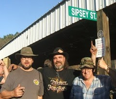
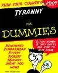

Wednesday, September 30, 2009
Slobodan Milošević Strikes Back? Weird. The symbol of the "American Police Force" in Hardin, MT is the Serbian Coat of Arms.

Most of you are probably familiar with this brewing "American Police Force" scandal in Hardin, MT of all places. See W. N. Grigg, for one, if you haven't.
I've been out of the loop, but typeay writes today, pointing out that these schmucks, whoever they are, have adopted the Serbian Coat of arms as their symbol. What the f . . , uh, heck?!?

What is this? Slobodan Milošević strikes back?
The next political move: Alabama "Rainy Day Patriots" are going to take the fight to the enemy: the state-run media outlet, CNN.
Here is the e-mail from the Alabama Rainy Day Patriots. If I can, I will be there with them. Hope to see some Threeper flags there.
Mike
III
Mike
III
The Rainy Day Patriots.org head to ATLANTA, Ga.
MEDIA PROTEST at CNN
The 9-12 March on Washington was only the beginning….
Here’s what’s next – - We are PEACEFULLY protesting the COMPLICIT and BIASED media on the sidewalks outside CNN’s headquarters in downtown Atlanta. Come join the rest of the Rainy Day Patriots as we make ourselves heard! This is part of a nation-wide protest where thousands all across the country are attending similar protests at other major news outlets on the same day. Join us and help us make the most impact at these huge media moguls!
Date: Saturday, October 17, 2009, 12 hours round trip from Birmingham,AL to Atlanta, GA.
Leave Time/Arrival Time: 6:30am/6:30pm CT
What to expect on the ride: We will make one one stop for breakfast/break going and one stop for dinner/break coming back. We ask that you wear your Rainy Day Patriot T-shirt. They can be purchased at this link for $16.
Protest Time: We’ll start assembling at CNN Center at 10:30am, Protest from noon – 2pm. ET
Location: CNN is located at One CNN Center Drive which is on the corner of Centennial Olympic Park Drive and Marietta St. Official address is 190 Marietta St., Atlanta GA 30303.
Click Here To Register to ride round-trip on our Media Tea Party bus ($28.75 per person.)
Payment and cancellations October 9.
SPACE IS LIMITED,MAKE YOUR RESERVATIONS NOW.
We will be protesting from CNN Center and up the Marietta St. sidewalk to the Atlanta Journal Constitution headquarters located at 72 Marietta St. We will (and must) stay on the sidewalks – we do not have permits to close the streets or for Centennial Olympic Park due to previously scheduled concurrent events
Theme: Media Complicity / Media Bias.
Signage
Let’s stay on message and NOT give the media any ammo against us. The message is COMPLICIT MEDIA and MEDIA BIAS. So please stay away from the following messages:
No Anti-Obama, Pelosi, Reid, others
No Obamacare / Healthcare messages
No “Liar” related
No name calling
No Glenn Beck or Rush Limbaugh for President
Here are some sign ideas:
Lessons on Counting
Media is supposed to be the Watchdog, not Lapdog
Tell the WHOLE Story
Can You Hear Us Now?
Can You See Us Now?
Boycott: Time Warner, GE, Capital Cities and all their subsidiaries
State Run Media – add logos
CNN – Controlled News Network
This is a marathon Not a sprint
Truth or Consequences
Silence in Consent
Sign Making Party:
When: October 15, 2009, 7:00 pm
Location: Location Needed – please help if you have any ideas.
Visit us at www.rainydaypatriots.org for more details.
Click Here To Register to ride on our Media Tea Party bus ($28.75 per person.)
Thank you,
The Rainy Day Patriots
www.rainydaypatriots.org
rainydaypatriots@gmail.com
A. No, I'm not dead yet. B. Light posting ahead. C. If you're going to read anything today, read this . . .
Elephant rotting in the sun. What shall we do about about the GOP?
Folks,
To answer your e-mails collectively, I would first like to say that reports of my death have been greatly exaggerated. (Poor ATF.)
Second, I have had several intruding events take me away from the blog, and this will continue for the near future, until (and I have reluctantly concluded this) I must put Sipsey Street into suspended animation in order to finish Absolved.
There are several pieces I am working on now, not the least of which is my second letter to Holder. When that is done and posted, I will suspend day-to-day blogging until Absolved is a completed manuscript.
That said, here is something you should read today, and think about -- hard. If we dodge the many bullets already in flight (unlikely but possible) how do we achieve the aim of restoring the Constitutional Republic politically?
Is that even possible, without the sanguinary effect of civil war?
Mike
III

Folks,
To answer your e-mails collectively, I would first like to say that reports of my death have been greatly exaggerated. (Poor ATF.)
Second, I have had several intruding events take me away from the blog, and this will continue for the near future, until (and I have reluctantly concluded this) I must put Sipsey Street into suspended animation in order to finish Absolved.
There are several pieces I am working on now, not the least of which is my second letter to Holder. When that is done and posted, I will suspend day-to-day blogging until Absolved is a completed manuscript.
That said, here is something you should read today, and think about -- hard. If we dodge the many bullets already in flight (unlikely but possible) how do we achieve the aim of restoring the Constitutional Republic politically?
Is that even possible, without the sanguinary effect of civil war?
Mike
III
Monday, September 28, 2009
An old sign allegedly popping up in new places.
This sign is supposed to be popping up at the Mason-Dixon Line these days. I doubt that's true, but perhaps it should be.
This was forwarded to me by Wretched Dog with this comment:

This was forwarded to me by Wretched Dog with this comment:
Unproved, but good if true. Whenever I used to commute from Los Angeles and the PDSRK (that is the “People’s Democratic Socialist Republik of Kalifornia) to the family in Kingman, AZ, I often thought (well, every time I crossed the Colorado River and into Arizona) that there should be a sign on the AZ side of the river/border: “Welcome to America.”
The Only Question a Politician Should Be Required to Answer
My friend John Russell sent me this, and I thought y'all would like it too.
The Only Question a Politician Should Be Required to Answer
By: John Russell | Source: IRN/USA News
September 28, 2009 8:18PM EST
It will start in the spring or summer of next year, the recurring civic ritual called the national elections. Would be office holders along with those who already part of the criminal enterprise called government will descend like locusts seeking out the gullible to build a base of support. An important part of this process is spontaneously answering the questions of perspective voters, especially those written in advance.
Now the questions asked will depend on the interests of the constituents of a given political division. If the electorate tends to be “progressive” then the questioning will go something like this. “Mr. or Ms. candidate I feel that as an ergo-challenged American it is grossly unfair that I should be required to scratch my own backside. What do you plan to do about this problem?” To which the candidate will likely reply, “I’m glad you asked that question. If elected I plan to introduce the Backside Abrasion Assistance and Social Justice Act.” thereby assuring another vote from a now informed voter.
For those, however, who do not see government as the solution for their problems it generally goes this way. “Mr. or Ms. Candidate what are you going to do to protect what’s left of my liberty and my wallet?” The standard reply is, ”My fellow patriot if you send me to (wherever the planned malfeasance is to occur) I will defend your rights as if they were my own.”
This answer, in reality is meaningless, because the question is the wrong one. If all you require from someone is that they defend something then your expectations are too low. The next time this electoral worthy comes to you seeking your support and you ask “what they have done in the interest of my freedom” they have no need to show any progress. “I did my best”, they will say, “but those rascals across the isle resisted my efforts at every turn. But I did lead the successful fight to stop the “Report With Your Children for Execution Act.” With another bullet dodged you’re expected to gratefully return this character to the scene of the crime with a new bag of burglar tools.
Let’s say that we do something different. Instead of asking the usual questions let’s try this one, just for a bit of sport. “Mr. or Ms. Candidate I only have one question for you which of the thousands of unconstitutional and insulting laws and regulations do you plan to repeal if I give you my vote?”
At this point I have to warn all would be questioners not to pose this question to an aged or infirm political hopeful as a voter induced coronary can only lead to bad press, and a new file with Homeland Security.
If every lover of liberty and the Constitution that allegedly guarantees it will ask this question, and not get sidetracked and demand a straightforward answer, it will become evident who will best serve the republic. Any who find the question to hard need not apply for the job.
An interesting discussion from last year: "The Love of One’s Own and the Importance of Place."
I thank Bob Wright for forwarding me this thoughtful piece. I have not had time yet to digest it myself, as I am preoccupied with some things that demand my attention, I present it here for your edification and amusement until I return to the blog.
Mike
III
The Love of One’s Own and the Importance of Place
Stratfor
May 26, 2008 | 1839 GMT
Editor’s Note: This is the first in a series of monographs by STRATFOR founder George Friedman on examining world affairs and predicting their outcome.
By George Friedman
The study of geopolitics tries to identify those things that are eternal, those things that are of long duration and those things that are transitory. It does this through the prism of geography and power. What it finds frequently runs counter to common sense. More precisely, geopolitical inquiry seeks not only to describe but to predict what will happen. Those predictions frequently — indeed, usually — fly in the face of common sense. Geopolitics is the next generation’s common sense.
William Shakespeare, born in 1564 — the century in which the European conquest of the world took place –- had Macbeth say that history is a tale told by an idiot, full of sound and fury, signifying nothing. If Macbeth is right, then history is merely sound and fury, devoid of meaning, devoid of order. Any attempt at forecasting the future must begin by challenging Macbeth, since if history is random it is, by definition, unpredictable. There is no action taken that is not done with the expectation, reasonable or not, erroneous or not, of some predictable consequence.
Forecasting is built into the human condition. Each action a human being takes is intended to have a certain outcome. The right to assume that outcome derives from a certain knowledge of how things work. Sometimes, the action has unexpected and unintended consequences. The knowledge of how things work is imperfect. But there is a huge gulf between the uncertainty of a prediction and the impossibility of a prediction. When I get up and turn on the hot water, it is with the expectation that the hot water will be there. It isn’t always there and I may not have a full understanding of why it will be there, but in general, it is there and I can predict that. A life is made up of a fabric of such expectations and predictions. There is no action taken that is not done with the expectation, reasonable or not, erroneous or not, of some predictable consequence.
The search for predictability suffuses all of the human condition. Students choose careers by trying to predict what would please them when they are 30 years older, what would be useful and therefore make them money and so on. Businesses forecast what can be sold and to whom. We forecast the weather, the winners of elections, the consequences of war and so on. There is no level on which human beings live that they don’t make forecasts and, therefore, on which they don’t act as if the world were to some degree predictable.
There are entire professions based on forecasting. The simplest sort of forecast is about nature. Nature is the most predictable thing of all, since it lacks will and cannot make choices. Scientists who like to talk about the “hard sciences” actually have it easy. Saturn will not change its orbit in a fit of pique. The hardest things to predict are things involving human beings. First, human beings have choices as individuals. Second, and this is the most important thing, we are ourselves human. Our own wishes and prejudices inevitably color our view of how things will evolve.
Nevertheless, entire sciences of forecasting exist. Consider econometrics, a field dedicated — with greater or lesser success — to predicting how a national economy will perform. Consider military modeling and war gaming, which try to predict how wars will be fought. Stock analysts try to predict the future of stock markets, labor analysts try to predict the future of labor markets and so on. Forecasting permeates society.
All of these social forecasting systems operate the same way. Rather than trying to predict what any individual will do, they try to generate a statistical model consisting of many individuals, the goal of which is to predict the general patterns of behavior. Economics and war share in common the fact that they deal with many individual actors interacting with nature and technology to try to forecast, in general, the direction and outcome of things.
Birth and Love
Successful forecasting should begin by being stupid. By being stupid we mean that rather than leaping toward highly sophisticated concepts and principles, we should begin by noting the obvious. Smart people tend to pass over the obvious too quickly, searching for things that ordinary people won’t notice. Their forecasting floats in air rather than being firmly anchored in reality. Therefore, let’s begin at the beginning.
Since it is human history we are trying to forecast, we should begin by noticing the obvious about human beings. Now, there are many things we can begin with, but perhaps the most obvious thing about humans — and about other animals — is that they are born and then they die. Human beings are born incapable of caring for themselves. Physically, human beings must be nurtured for at least four or five years, at minimum, or they will die. Socially, in some advanced industrial countries, that nurturing can last into a person’s thirties.
Humans protect themselves and care for their young by forming families. But a small family is inherently vulnerable. It is easier to steal from the weak than to produce for oneself. Therefore, an isolated family is always vulnerable to human predators — people who will steal, enslave and kill. In order to protect small families, it makes sense to create larger communities, where some nurture, some hunt, some farm, some make things and some defend the community. The division of labor is an obvious outcome of human physical nature. Now, the question of division of labor is obvious: Who should you ally with and where would you find them? That question is only mysterious when asked in the abstract. In practice, the answer is obvious. Cousins and uncles and in-laws constitute the natural milieu of the division of labor.
And this, in turn, raises the most important question: Why should you trust a relative more than a stranger? This is the eccentric core of our problem. It is the question of the love of one’s own. It is a matter that stands at the heart of any understanding of how humans behave and whether that behavior can be predicted. It also contrasts sharply with a competing vision of love — the love of acquired things, a tension that defines the last 500 years of European and world history.The idea that romantic love should pre-empt the love of one’s own introduces a radical new dynamic to history, in which the individual and choice supersede community and obligation.
Let’s begin in an odd place — Shakespeare’s Romeo and Juliet. The subject of the play is the relationship between these two kinds of love. Romeo and Juliet are born to different families, different clans. These clans are at war with one another. Romeo and Juliet fall in love. The question of the play is this: Which love is prior? Is it the love to which you are born — your family, your religion, your tradition — the love of one’s own? Or is it the acquired love, the one you have chosen because it pleases you as an individual?
In most of human history and in most human societies, marriages were arranged. One married from love, but not out of love for one’s betrothed. Rather, one married out of love for one’s parents, and out of the sense of duty that grew out of that love. The Fifth Commandment of the Decalogue demands that one honor one’s mother and father. That is not about calling home. It is about this: Their God is your God, their friends are your friends, their debts are your debts, their enemies are your enemies and their fate is your fate.
Shakespeare juxtaposes that sort of love with romantic love. Romantic love is acquired love. An infant is born to his traditions. An infant cannot fall in love. The idea that romantic love should pre-empt the love of one’s own introduces a radical new dynamic to history, in which the individual and choice supersede community and obligation. It elevates things acquired through choice as superior to the things one is born with.
This notion is embedded in the American Declaration of Independence, which elevates life, liberty and the pursuit of happiness over obligation. Indeed, modern Europe in general introduced an extraordinary idea with the rise of revolutionary Protestantism and its mutation into the European Enlightenment, an idea paralleling the concept of romantic love — the notion of ideology. Ideology is an acquired value. No child can be a Jeffersonian or a Stalinist. That can only be chosen after the age of reason, along with romantically acquired spouses.
Protestantism elevates conscience to the pinnacle of human faculties and conscience dictates choice. When the Enlightenment joined choice with reason, it created the idea that in all things — particularly in political life — the individual is bound not by what he was taught to believe but by what his own reason tells him is just and proper. Tradition is superseded by reason and the old regime superseded by artificially constructed regimes forged in revolution.
To fully appreciate this paradox, consider the following. I am an American. I am also a citizen of the United States. America is a natural entity, a place and a people. You are American at the moment of birth. It is the way in which you identify yourself to the rest of the world. Then there is the United States. It is impossible, linguistically, to refer to yourself as a “United Statian.” It makes no sense. You can refer to yourself as a citizen of the United States. As a citizen, you have a relationship to an artificial construct, the constitution, to which you swear your loyalty. It is a rational relationship and, ultimately, an elective relationship. Try as one might, one can never stop being an American. One can, as a matter of choice, stop being a citizen of the United States. Similarly, one can elect to become a citizen of the United States. That does not, in the fullest sense of the word, make you an American. Citizenship and alienage are built into the system.
It is very easy to be an American. You are born to it. By language, by culture, by all of the barely conscious things that make you an American, you are an American. To become a citizen of the United States, in the fullest sense of the word, you must understand and freely accept the obligations and rights of citizenship. Loving America is simple and natural. Loving the United States is complex and artificial. This is not only about the United States, although the linguistic problem is the most striking. Consider the Soviet Union and its constituent nations, or France as opposed to the French Republic.
The modern Enlightenment celebrated acquired love and denigrated the love of one’s own. Indeed, modernity is the enemy of birth in general. Modern revolutionary regimes overthrew the ancient regimes precisely because the ancient regimes distributed rights based on birth. For modern regimes, birth is an accident that gives no one authority. Authority derives from individual achievement. It is based on demonstrated virtue, not virtue assumed at birth.
The struggle between the love of one’s own and acquired love has been the hallmark of the past 500 years. It has been a struggle between traditional societies in which obligations derive from birth and are imposed by a natural, simple and unreflective love of one’s own and revolutionary societies in which obligations derive from choice and from a complex, self-aware love of things that are acquired — lovers or regimes.
In traditional society, you knew who you were and that, in turn, told you who you would be for the rest of your life. In post-revolutionary society, you may know who you were but that in no way determined who you would become. That was your choice, your task, your obligation. Traditional society was infinitely more constrained but infinitely more natural. Loving one’s parents and home is the simplest and first emotion. It is far easier to love and hate the things you love and hate than to go into the world and choose what else there is to love and hate.
This leads us to nationalism — or, more broadly, love and obligation to the community to which you were born, be it a small band of nomads or a vast nation-state. The impulse to love one’s own is almost overpowering. Almost, but not quite, since in modernity, self-love and the love of acquired things is celebrated while love of one’s own is held in suspicion. The latter is an accident. The former is an expression of self and therefore more authentic.
Modern liberalism and socialism do not know what to do with nationalism. On one side, it appears to be an atavistic impulse, irrational and unjustifiable. Economists —who are the quintessential modern thinkers — assume with their teacher Adam Smith that the primary purpose of individuals is to maximize their self-interest in a material sense. To put it simply, acquire wealth. They argue that this is not only something they should do but something that all men will do naturally if left to their own devices.
For economists, self-interest is a natural impulse. But if it is a natural impulse, it is an odd one, for one can see widespread examples of human beings who do not practice it. Consider the tension between the idea that the United States was created for the purpose of “life, liberty and the pursuit of happiness,” and the decision of a soldier to go to war and even willingly give his life. How can one reconcile the constant presence of self-sacrifice for the community — and the community’s demand for self-sacrifice — with the empirical claim that men pursue the acquisition of goods that will give them happiness? War is a commonplace event in modernity and soldiers go to war continually. How can a regime dedicated to life, liberty and the pursuit of happiness demand that its citizens voluntarily put themselves between home and war’s desolation?
Obviously this happens. Nationalism is very much a critical driver today, which means that the love of one’s own remains a critical driver. Dying for a regime dedicated to the pursuit of happiness makes no sense. Dying for the love of one’s own makes a great deal of sense. But the modern understanding of man has difficulty dealing with this idea. Instead, it wants to abolish war, banish war as an atavism or at least brand war as primitive and unnatural. This may all be true, but it should be noted that war simply won’t go away. Neither will love of one’s own and all that follows from it.
There is an important paradox in all this. Modern liberal regimes celebrate the doctrine of national self-determination, the right of a “people” to choose its own path. Leaving apart the amazing confusion as to what to do with a nation that chooses an illiberal course, you have the puzzlement of precisely what a nation is and why it has the right to determine anything.
Historically, the emergence of the doctrine of national self-determination had to do with the political dynamics of Europe and America’s revolutions. Europe had been ruled by dynasties that governed nations by right of birth. Breaking those regimes was the goal of Europe’s revolutionaries. The driving impulse for the European masses was not a theory of natural rights but a love of their own communities and nations and a hatred of foreign domination. Combining revolutionary moral principles with the concept of the nation created the doctrine of national self-determination as a principle that coincided with the rights of man. Now, the fact that the right of the individual and the right of the nation — however democratically ruled it might be —stood in direct opposition to each other did not deter the revolutionaries. In the case of the American founders, having acted on behalf of national self-determination, they created a Bill of Rights and hoped that history would sort through the contradiction between the nation, the state and the individual.
At the root of modern liberal society, the eccentric heart of the human condition continues to beat — love of one’s own. Its eccentricity can be clearly seen now. Why should we love those things that we are born to simply because we are born to them? Why should Americans love America, Iranians love Iran and Chinese love China? Why, in spite of all options and the fact that there are surely many who make their lives by loving acquired things, does love of one’s own continue to drive men?
Andre Malraux wrote once that men leave their country in very national ways. An American expatriate is still an American and very different from a Mongolian expatriate. Wherever one chooses to go, whatever identity one chooses to claim, in the end, you cannot escape from who you are. You can acquire as many loves as you might, yet in the end, whether you love one’s own or not, you are what you were born. Your room for maneuver is much less than you might have thought. A man may have given up his home, but his home has not given him up. You can reject your obligations — you can cease to love — but your own remains your own. At the root of modern liberal society, the eccentric heart of the human condition continues to beat — love of one’s own.
For the vast majority of humanity, this is not only the human condition, but it is a condition in which there is no agony. Being born an American or a Ukrainian or Japanese and remaining one is not only not an effort, it is a comfort. It tells you who you are, where you belong and what you must do. It relieves you of choice but frees you to act. There are those for whom this is a burden and they have shaped our understanding of ourselves. As much as Ernest Hemingway hated his home town, he remained, to the moment of his death, a man from an American small town. The only difference between Hemingway and the clerk in his hometown drugstore was that the clerk was content with who he was and Hemingway died desperately trying to escape from himself. In the end he could not.
There is no escape from love of one’s own, at least not for the mass of humanity. The Fifth Commandment remains the most human and easy of the Decalogue. Nietzsche spoke of horizons. A horizon is an optical illusion, but it is a comforting illusion. It gives you the sense that the world is manageable rather than enormously larger than you are. The horizon gives you a sense of place that frames you and your community. It relieves you of the burden of thinking about the vastness of things. It gives you a manageable place, and place, after love, defines who you are the most.
In practical terms, this means that nationalism — the modern form of the love of things that you were born to — remains the driving force of humanity. There have been many predictions that interdependency means the decline of the nation-state, the decline of religious exclusivity, the decline of war. For this to be true, the basic impulse to love one’s own, to love the things one was born to, would have to be overcome. Certainly, economic self-interest is a powerful force, but there is no empirical evidence that economic self-interest undermines the intensity of nationalism.
Quite the contrary. During the 20th century, at the same time that economic interdependence grew, nationalism became more and more intense. In fact, it became more and more refined as smaller and smaller groupings claimed national identity and rights. The history of the 20th century was the simultaneous intensification of economic rationalism and the intensification of nationalism. Nothing can be understood about the future that doesn’t grasp the essential necessity and permanence of nationalism as a commitment that frequently transcends individual economic interests.
Place and Fear
Communities — cities, nations, even nomads — exist in places. Separate them from their places and their natures change. There is certainly such a thing as culture — language, religion, table manners and so on — that does not simply reduce itself to place. At the same time there are characteristics that can only be ascribed to place, understood in the broadest sense. If we say that who you are born to matters, then geopolitics teaches that where you are born also matters.
Begin with the simplest fact. An Eskimo experiences the world differently from a New Yorker. That requires no explanation. An Eskimo, particularly in his traditional life, before contact with Europeans, faced nature directly. He ate what he caught or found. What he caught or found was determined by where he was. How he caught or found these things was determined by what they were and what tools he had at hand and that, in turn, was determined by place. Certainly, culture could not simply be seen as the expression of this struggle. Humans are far too complex to be reduced to this. At the same time, someone born in that particular place to those particular people experiences life in a particular way.
Consider a New Yorker. Most New Yorkers would be as bewildered on the coast of the Arctic Ocean as an Eskimo would be in Manhattan. A New Yorker gains his sustenance in extraordinarily different ways than an Eskimo. The purpose here is not to delve into the esoterica of American urban life but to simply point out the obvious, which is that living like a New Yorker is as idiosyncratic as living in the Arctic wastes. Place determines the nature of a community. It determines who will wage wars, who they will wage wars against and who will win. Place defines enemies, fears, actions and, above all, limits.
We will not go into the ways in which geography shapes a nation’s culture. Thucydides noted the difference between a coastal city and an inland city. He discussed the difference between large cities and small ones, cities with enough resources to build walls and villages that lacked the resources to build walls and therefore never truly became cities. It is easy to consider the difference between being born in Singapore and being born in Ulan Bator.
But there is a fundamentally important concept to introduce in relation to place: the idea of fear. Wherever you live, there is always the fear of the other nation, the other community. Two communities, living side by side, always live in fear of the other. The origin of the fear is the unknown intention of the other. No one can know what another person really intends. In casual relationships, where the cost of miscalculation is something trivial, you are free to assume the best about people. Where the only thing at stake is your own life and your own freedom, the consequences of miscalculation can be borne. But when the lives and freedom of your children, your spouse, your parents and everything you hold dear is at stake, then your right to take chances decreases dramatically. At this point, the need to assume the worst case takes precedence.
Wars originate far less in greed than they do in fear. Thomas Hobbes in the Leviathan explained this in detail. It is the unknown intention and capability that causes neighbors to distrust one another. Knowing that one’s own intentions are benign does not mean anything concerning your neighbor. His appetite for conquest is the great unknown. This drives a community to more than defense. It drives them to pre-emption. If the enemy wishes the worse, then better to strike first. In a universe of mirrors, where the soul of the other is permanently shielded, logic forces one to act vigorously and on the worst case.
Place determines the nature of a community. It drives the manner in which humans make a living, how they bear and raise children, how they grow old. It determines who will wage wars, who they will wage wars against and who will win. Place defines enemies, fears, actions and, above all, limits. The greatest statesmen born in Iceland will have less impact than the poorest politician born in the United States. Iceland is a small, isolated country where resources and options are limited. The United States is a vast country with access to the world. While its power is limited it is nonetheless great. Place determines the life of peasants and presidents.
Place imposes capabilities. It also imposes vulnerabilities. Consider a nation like Poland, sandwiched between two much larger countries, Germany and Russia. It lacks any natural defensive positions — rivers, mountains, deserts. Throughout its history it has either been extremely aggressive, pushing back its frontiers (rare, given its resources), or a victim (its usual condition). To a great extent, the place the Polish people occupy determines Poland’s history.
It goes deeper than that. Place also determines economic life. Germany was heavily dependent on French iron ore to fuel its economic life. The Japanese were heavily dependent on the United States for steel and oil to run its industries. Neither Germany nor Japan could control American behavior. Both France and the United States tried to use German and Japanese dependence on them to control their behavior. Germany and Japan were both terrified that they would be strangled. How could they know the intentions of the others? Did they have the right to stake their futures on the continued good will of countries with whom they had other disagreements?
Had French steel been located one hundred miles to the east or had Japan had oil and other minerals close at hand and under its control, history might have evolved differently. But place was place, and the iron mines were to the west of Germany and the oil was thousands of miles away from Japan. Both countries were driven by two things. The first was interdependence — the fact that they were not self-sufficient created vulnerability. The second was fear that the country they were dependent on would exploit that vulnerability to crush them.
The result was war. The Germans, whether under Bismarck, the Kaiser or Hitler, tried to transform the situation by imposing their will on the French. The Russians, terrified of a Germany that was powerful and secure on its western flank, did not want to see France defeated. Germany, knowing of Russian fears, understood that if France and Russia attacked Germany simultaneously, in a time and manner of their own choosing, Germany would be defeated. Fearing this, Germany tried on three occasions to solve its problem by striking first. Each time it failed.
What is important here is only this: Nations and other communities act out of fear far more than they act out of greed or love. The fear of catastrophe drives foreign policies of nomadic tribes and modern nation-states. That fear, in turn, is driven by place. Geography defines opportunities; it also defines vulnerabilities and weaknesses. The fear of dependence and destruction drives nations, a fear that is ultimately rooted in place.
Time and Resistance
Any model of how communities behave that assumes that a community behaves as if it were a single organism is obviously wrong. A community is filled with numerous sub-communities, divided many ways. It can contain a range of ethnic groups, religious distinctions or socially determined castes. But the single most important distinction, of course, is the difference between rich and poor. That distinction, more than anything else, determines how someone lives his life. The difference in the life of a poor peasant without land and a wealthy man is qualitatively different in all respects except the fundamental facts of birth and death. They live differently and earn their livings differently. They can be grouped by the manner in which they live and earn their livings into classes of men.
No one who has thought about political life has ever failed to miss the presence and importance of social and economic class. In the 19th and 20th centuries, thinkers like Karl Marx elevated the importance of social class until it was considered more important than any other human attribute. Nation, family, religion — all became not only less important than class but also simply the manifestation of class. That became the driver of everything. In the same way that economic liberalism elevated the isolated individual to the essence of being human, socialists elevated class.
It is interesting to note that economic liberals and Marxists, on the surface mortal enemies, both shared a single common view that the nation, understood as a unitary community that made all other things possible, was at best a convenience and at worst a prison. Both expected the nation and other communities to whither away, one through the transnationalism of capital, the other through the transnationalism of the working class.Societies and people run on different clocks. A society counts in terms of generations and centuries. A man counts in terms of years and decades. This is the fundamental tension between a nation and an individual.
For the rich and the intellectual, an optical illusion frequently emerges: that nationalism really doesn’t matter. The world’s richest people, able to place layers of technology and servants between themselves and nature, live far more like each other than like their own countrymen. Place matters to them less than others. Consider the royal families of Europe in the first global epoch. The more successful they became the less differentiated they were from each other and the more differentiated they were from their countrymen.
It is the nature of technology that it not only dominates nature but also places layers of separation between the human condition and nature. Therefore, in obvious ways, the more advanced a community’s technology the less important place becomes — or appears to become. An American banker, for example, has much more in common with his German or Chinese counterpart than he has with many of his own countryman. Wealth appears to dissolve place. The same with the intelligentsia, who have more in common with each other than with the town folk who serve the food at the university.
One would think that similar universalization of interest would take place among poorer people. Karl Marx argued that the workers have no country and that they feel transnational solidarity with other workers. Bankers might have no country and intellectuals might imagine that workers have no country, but there is not the slightest empirical evidence that the workers or peasants have felt they have no country or, at least, community. Certainly, the 20th century has been the graveyard of intellectual fantasies about the indifference of the lower classes to national interest.
In two world wars, it was the middle and lower classes that tore the guts out of each other. In the United States, it was the middle and lower classes that supported the war in Vietnam. Any discussion of geopolitics must begin with an explanation for this, since the normal one, which is that the poor are manipulated by the rich to be warlike, makes little sense. After all, the rich usually oppose wars as bad for business and — far more important — the poor are not nearly as stupid as intellectuals think they are. They have good reasons for behaving as they do.
Begin with the principle of shared fate. Think of two axes. First, think of the size of a nation or community. Consider Israel, which is a small country. Whatever happens to Israel happens to everyone in it. If Israel is overrun, no Israeli is immune to the consequences and the consequences can be profound or even catastrophic. In larger nations, particular in nations that are less vulnerable, it is easy to hypothesize — or fantasize — circumstances in which consequences to the community will not affect you. Americans can imagine that national security is not of personal consequence to them. No such hypothesis is credible in smaller nations at direct risk, and no such fantasy can sustain itself.
The second axis is class. It is easier for the wealthy to shield themselves from a fate shared with their community than it is for middle- and lower-class citizens. The wealthy can store money in other countries, have private planes standing by, are able to send their children to live in foreign countries and so on. No such options exist for those who are not wealthy. Their fate is far more intimately bound up with their nation’s fate. This is the case on matters ranging from war to population movement to liberalized trade. The wealthy can protect themselves from the consequences — or even profit by those consequences. The rest cannot.
It follows logically from this that the lower classes would tend to be much more conservative in the risks they want their country to take on a spectrum of international relations. Having less room for maneuver, more to lose relative to what they have and less profit from successful risk, the average person is risk-averse, more mistrustful of the intentions of foreign countries and more suspicious of the more extravagant claims made by the rich and intellectuals about the benefits of transcending nationalism.
If love is the first emotion that men experience, then fear is the second. Love of one’s own is rapidly followed by fear of the other. The weaker the person the fewer resources he has and the more dependent he is on the community he inhabits. The more dependent he is, the more cautious he will be in taking risks. The more suspicious he is about the risks undertaken by his wealthier countrymen the more dubious he will be about anything that puts at risk his community or that dilutes his autonomy and thereby further weakens his life. The wealthy and powerful are free to be avaricious and greedy. They are free to take risks and to be adventurous. The common man lives his life in fear — and he is not at all irrational in doing so.
In a democratic age, the class struggle is not as Marx envisioned it. It is a struggle between the wealthy internationalists and the common nationalists. The internationalist, having room for maneuver, argues that in the long run, transnational adventures — WTO, IMF, EU, NAFTA — will benefit society as a whole. Their poorer compatriots don’t deny this, but they do not share the long run. If they lose their jobs, their grandchildren may prosper, but their own lives are shattered. The long run is real, but it is a perspective that only the wealthy can enjoy.
The purely self-interested individual exists, but he is harder to find than one might think. The nation-state solely committed to economic development is equally hard to find. There is first the obvious reason. Pursuing economic growth without considering the danger of pure growth is suicidal. The wealthier you are, the greater the temptation of others to steal that wealth. Defending wealth is as important as growing it. But the defense of wealth runs counter to building wealth, both in terms of expense and culturally. In the end, a society is much more complex than an engine of economic growth and therefore it is more than an arena for economic classes.
There is a deeper aspect to this. Economic growth, of the sort that might transform the United States from a barely settled agrarian nation into an industrial and technological giant, takes generations. Those generations require sacrifice and austerity in order to achieve goals. They require a social discipline in which, as just one example, immigrant parents live out lives more impoverished than might be necessary in order to raise children who can live better. The willingness of a parent to sacrifice not merely his life but his comfort, hopes and aspirations in order for his children to succeed in life is not only the foundation of economic development but also a refutation of any model that regards the individual as the self-obsessed instrument of history. It just doesn’t work.
Scenarios such as this do not play out in a vacuum, however. Consider the following example. Assume that it were demonstrated clearly that it would greatly benefit the United States if China took over all production of electronic equipment. Assume that in 30 years it would mean the doubling of the GDP and standard of living in the United States. From the standpoint of society as a whole, it might be a good idea.
However, look at it from the standpoint of a 30-year-old American computer engineer with a child. Those 30 years would cover his productive life. He would not be able to practice his chosen profession, and also the massive investment in his education would not pay off. Between the ages of 30 and 60, when the social payoff should come, he would live a life quite different from the one he hoped for and would be, in all likelihood, substantially less comfortable.
Societies and people run on different clocks. A society counts in terms of generations and centuries. A man counts in terms of years and decades. What constitutes a mere passing phase in American history, in a small segment of the economy, constitutes for that individual the bulk of his life. This is the fundamental tension between a nation and an individual. Nations operate on a different clock than individuals. Under most circumstances, where the individuals affected are few and disorganized, the nation grinds down the individual. In those cases where the individual understands that his children might make a quantum leap forward, the individual might acquiesce. But when the affected individuals form a substantial bloc, and when even the doubling of an economy might not make a significant difference in the happiness of children, they might well resist.
The important point here is to focus on the clock, on the different scales of time and how they change things.
Mike
III
The Love of One’s Own and the Importance of Place
Stratfor
May 26, 2008 | 1839 GMT
Editor’s Note: This is the first in a series of monographs by STRATFOR founder George Friedman on examining world affairs and predicting their outcome.
By George Friedman
The study of geopolitics tries to identify those things that are eternal, those things that are of long duration and those things that are transitory. It does this through the prism of geography and power. What it finds frequently runs counter to common sense. More precisely, geopolitical inquiry seeks not only to describe but to predict what will happen. Those predictions frequently — indeed, usually — fly in the face of common sense. Geopolitics is the next generation’s common sense.
William Shakespeare, born in 1564 — the century in which the European conquest of the world took place –- had Macbeth say that history is a tale told by an idiot, full of sound and fury, signifying nothing. If Macbeth is right, then history is merely sound and fury, devoid of meaning, devoid of order. Any attempt at forecasting the future must begin by challenging Macbeth, since if history is random it is, by definition, unpredictable. There is no action taken that is not done with the expectation, reasonable or not, erroneous or not, of some predictable consequence.
Forecasting is built into the human condition. Each action a human being takes is intended to have a certain outcome. The right to assume that outcome derives from a certain knowledge of how things work. Sometimes, the action has unexpected and unintended consequences. The knowledge of how things work is imperfect. But there is a huge gulf between the uncertainty of a prediction and the impossibility of a prediction. When I get up and turn on the hot water, it is with the expectation that the hot water will be there. It isn’t always there and I may not have a full understanding of why it will be there, but in general, it is there and I can predict that. A life is made up of a fabric of such expectations and predictions. There is no action taken that is not done with the expectation, reasonable or not, erroneous or not, of some predictable consequence.
The search for predictability suffuses all of the human condition. Students choose careers by trying to predict what would please them when they are 30 years older, what would be useful and therefore make them money and so on. Businesses forecast what can be sold and to whom. We forecast the weather, the winners of elections, the consequences of war and so on. There is no level on which human beings live that they don’t make forecasts and, therefore, on which they don’t act as if the world were to some degree predictable.
There are entire professions based on forecasting. The simplest sort of forecast is about nature. Nature is the most predictable thing of all, since it lacks will and cannot make choices. Scientists who like to talk about the “hard sciences” actually have it easy. Saturn will not change its orbit in a fit of pique. The hardest things to predict are things involving human beings. First, human beings have choices as individuals. Second, and this is the most important thing, we are ourselves human. Our own wishes and prejudices inevitably color our view of how things will evolve.
Nevertheless, entire sciences of forecasting exist. Consider econometrics, a field dedicated — with greater or lesser success — to predicting how a national economy will perform. Consider military modeling and war gaming, which try to predict how wars will be fought. Stock analysts try to predict the future of stock markets, labor analysts try to predict the future of labor markets and so on. Forecasting permeates society.
All of these social forecasting systems operate the same way. Rather than trying to predict what any individual will do, they try to generate a statistical model consisting of many individuals, the goal of which is to predict the general patterns of behavior. Economics and war share in common the fact that they deal with many individual actors interacting with nature and technology to try to forecast, in general, the direction and outcome of things.
Birth and Love
Successful forecasting should begin by being stupid. By being stupid we mean that rather than leaping toward highly sophisticated concepts and principles, we should begin by noting the obvious. Smart people tend to pass over the obvious too quickly, searching for things that ordinary people won’t notice. Their forecasting floats in air rather than being firmly anchored in reality. Therefore, let’s begin at the beginning.
Since it is human history we are trying to forecast, we should begin by noticing the obvious about human beings. Now, there are many things we can begin with, but perhaps the most obvious thing about humans — and about other animals — is that they are born and then they die. Human beings are born incapable of caring for themselves. Physically, human beings must be nurtured for at least four or five years, at minimum, or they will die. Socially, in some advanced industrial countries, that nurturing can last into a person’s thirties.
Humans protect themselves and care for their young by forming families. But a small family is inherently vulnerable. It is easier to steal from the weak than to produce for oneself. Therefore, an isolated family is always vulnerable to human predators — people who will steal, enslave and kill. In order to protect small families, it makes sense to create larger communities, where some nurture, some hunt, some farm, some make things and some defend the community. The division of labor is an obvious outcome of human physical nature. Now, the question of division of labor is obvious: Who should you ally with and where would you find them? That question is only mysterious when asked in the abstract. In practice, the answer is obvious. Cousins and uncles and in-laws constitute the natural milieu of the division of labor.
And this, in turn, raises the most important question: Why should you trust a relative more than a stranger? This is the eccentric core of our problem. It is the question of the love of one’s own. It is a matter that stands at the heart of any understanding of how humans behave and whether that behavior can be predicted. It also contrasts sharply with a competing vision of love — the love of acquired things, a tension that defines the last 500 years of European and world history.The idea that romantic love should pre-empt the love of one’s own introduces a radical new dynamic to history, in which the individual and choice supersede community and obligation.
Let’s begin in an odd place — Shakespeare’s Romeo and Juliet. The subject of the play is the relationship between these two kinds of love. Romeo and Juliet are born to different families, different clans. These clans are at war with one another. Romeo and Juliet fall in love. The question of the play is this: Which love is prior? Is it the love to which you are born — your family, your religion, your tradition — the love of one’s own? Or is it the acquired love, the one you have chosen because it pleases you as an individual?
In most of human history and in most human societies, marriages were arranged. One married from love, but not out of love for one’s betrothed. Rather, one married out of love for one’s parents, and out of the sense of duty that grew out of that love. The Fifth Commandment of the Decalogue demands that one honor one’s mother and father. That is not about calling home. It is about this: Their God is your God, their friends are your friends, their debts are your debts, their enemies are your enemies and their fate is your fate.
Shakespeare juxtaposes that sort of love with romantic love. Romantic love is acquired love. An infant is born to his traditions. An infant cannot fall in love. The idea that romantic love should pre-empt the love of one’s own introduces a radical new dynamic to history, in which the individual and choice supersede community and obligation. It elevates things acquired through choice as superior to the things one is born with.
This notion is embedded in the American Declaration of Independence, which elevates life, liberty and the pursuit of happiness over obligation. Indeed, modern Europe in general introduced an extraordinary idea with the rise of revolutionary Protestantism and its mutation into the European Enlightenment, an idea paralleling the concept of romantic love — the notion of ideology. Ideology is an acquired value. No child can be a Jeffersonian or a Stalinist. That can only be chosen after the age of reason, along with romantically acquired spouses.
Protestantism elevates conscience to the pinnacle of human faculties and conscience dictates choice. When the Enlightenment joined choice with reason, it created the idea that in all things — particularly in political life — the individual is bound not by what he was taught to believe but by what his own reason tells him is just and proper. Tradition is superseded by reason and the old regime superseded by artificially constructed regimes forged in revolution.
To fully appreciate this paradox, consider the following. I am an American. I am also a citizen of the United States. America is a natural entity, a place and a people. You are American at the moment of birth. It is the way in which you identify yourself to the rest of the world. Then there is the United States. It is impossible, linguistically, to refer to yourself as a “United Statian.” It makes no sense. You can refer to yourself as a citizen of the United States. As a citizen, you have a relationship to an artificial construct, the constitution, to which you swear your loyalty. It is a rational relationship and, ultimately, an elective relationship. Try as one might, one can never stop being an American. One can, as a matter of choice, stop being a citizen of the United States. Similarly, one can elect to become a citizen of the United States. That does not, in the fullest sense of the word, make you an American. Citizenship and alienage are built into the system.
It is very easy to be an American. You are born to it. By language, by culture, by all of the barely conscious things that make you an American, you are an American. To become a citizen of the United States, in the fullest sense of the word, you must understand and freely accept the obligations and rights of citizenship. Loving America is simple and natural. Loving the United States is complex and artificial. This is not only about the United States, although the linguistic problem is the most striking. Consider the Soviet Union and its constituent nations, or France as opposed to the French Republic.
The modern Enlightenment celebrated acquired love and denigrated the love of one’s own. Indeed, modernity is the enemy of birth in general. Modern revolutionary regimes overthrew the ancient regimes precisely because the ancient regimes distributed rights based on birth. For modern regimes, birth is an accident that gives no one authority. Authority derives from individual achievement. It is based on demonstrated virtue, not virtue assumed at birth.
The struggle between the love of one’s own and acquired love has been the hallmark of the past 500 years. It has been a struggle between traditional societies in which obligations derive from birth and are imposed by a natural, simple and unreflective love of one’s own and revolutionary societies in which obligations derive from choice and from a complex, self-aware love of things that are acquired — lovers or regimes.
In traditional society, you knew who you were and that, in turn, told you who you would be for the rest of your life. In post-revolutionary society, you may know who you were but that in no way determined who you would become. That was your choice, your task, your obligation. Traditional society was infinitely more constrained but infinitely more natural. Loving one’s parents and home is the simplest and first emotion. It is far easier to love and hate the things you love and hate than to go into the world and choose what else there is to love and hate.
This leads us to nationalism — or, more broadly, love and obligation to the community to which you were born, be it a small band of nomads or a vast nation-state. The impulse to love one’s own is almost overpowering. Almost, but not quite, since in modernity, self-love and the love of acquired things is celebrated while love of one’s own is held in suspicion. The latter is an accident. The former is an expression of self and therefore more authentic.
Modern liberalism and socialism do not know what to do with nationalism. On one side, it appears to be an atavistic impulse, irrational and unjustifiable. Economists —who are the quintessential modern thinkers — assume with their teacher Adam Smith that the primary purpose of individuals is to maximize their self-interest in a material sense. To put it simply, acquire wealth. They argue that this is not only something they should do but something that all men will do naturally if left to their own devices.
For economists, self-interest is a natural impulse. But if it is a natural impulse, it is an odd one, for one can see widespread examples of human beings who do not practice it. Consider the tension between the idea that the United States was created for the purpose of “life, liberty and the pursuit of happiness,” and the decision of a soldier to go to war and even willingly give his life. How can one reconcile the constant presence of self-sacrifice for the community — and the community’s demand for self-sacrifice — with the empirical claim that men pursue the acquisition of goods that will give them happiness? War is a commonplace event in modernity and soldiers go to war continually. How can a regime dedicated to life, liberty and the pursuit of happiness demand that its citizens voluntarily put themselves between home and war’s desolation?
Obviously this happens. Nationalism is very much a critical driver today, which means that the love of one’s own remains a critical driver. Dying for a regime dedicated to the pursuit of happiness makes no sense. Dying for the love of one’s own makes a great deal of sense. But the modern understanding of man has difficulty dealing with this idea. Instead, it wants to abolish war, banish war as an atavism or at least brand war as primitive and unnatural. This may all be true, but it should be noted that war simply won’t go away. Neither will love of one’s own and all that follows from it.
There is an important paradox in all this. Modern liberal regimes celebrate the doctrine of national self-determination, the right of a “people” to choose its own path. Leaving apart the amazing confusion as to what to do with a nation that chooses an illiberal course, you have the puzzlement of precisely what a nation is and why it has the right to determine anything.
Historically, the emergence of the doctrine of national self-determination had to do with the political dynamics of Europe and America’s revolutions. Europe had been ruled by dynasties that governed nations by right of birth. Breaking those regimes was the goal of Europe’s revolutionaries. The driving impulse for the European masses was not a theory of natural rights but a love of their own communities and nations and a hatred of foreign domination. Combining revolutionary moral principles with the concept of the nation created the doctrine of national self-determination as a principle that coincided with the rights of man. Now, the fact that the right of the individual and the right of the nation — however democratically ruled it might be —stood in direct opposition to each other did not deter the revolutionaries. In the case of the American founders, having acted on behalf of national self-determination, they created a Bill of Rights and hoped that history would sort through the contradiction between the nation, the state and the individual.
At the root of modern liberal society, the eccentric heart of the human condition continues to beat — love of one’s own. Its eccentricity can be clearly seen now. Why should we love those things that we are born to simply because we are born to them? Why should Americans love America, Iranians love Iran and Chinese love China? Why, in spite of all options and the fact that there are surely many who make their lives by loving acquired things, does love of one’s own continue to drive men?
Andre Malraux wrote once that men leave their country in very national ways. An American expatriate is still an American and very different from a Mongolian expatriate. Wherever one chooses to go, whatever identity one chooses to claim, in the end, you cannot escape from who you are. You can acquire as many loves as you might, yet in the end, whether you love one’s own or not, you are what you were born. Your room for maneuver is much less than you might have thought. A man may have given up his home, but his home has not given him up. You can reject your obligations — you can cease to love — but your own remains your own. At the root of modern liberal society, the eccentric heart of the human condition continues to beat — love of one’s own.
For the vast majority of humanity, this is not only the human condition, but it is a condition in which there is no agony. Being born an American or a Ukrainian or Japanese and remaining one is not only not an effort, it is a comfort. It tells you who you are, where you belong and what you must do. It relieves you of choice but frees you to act. There are those for whom this is a burden and they have shaped our understanding of ourselves. As much as Ernest Hemingway hated his home town, he remained, to the moment of his death, a man from an American small town. The only difference between Hemingway and the clerk in his hometown drugstore was that the clerk was content with who he was and Hemingway died desperately trying to escape from himself. In the end he could not.
There is no escape from love of one’s own, at least not for the mass of humanity. The Fifth Commandment remains the most human and easy of the Decalogue. Nietzsche spoke of horizons. A horizon is an optical illusion, but it is a comforting illusion. It gives you the sense that the world is manageable rather than enormously larger than you are. The horizon gives you a sense of place that frames you and your community. It relieves you of the burden of thinking about the vastness of things. It gives you a manageable place, and place, after love, defines who you are the most.
In practical terms, this means that nationalism — the modern form of the love of things that you were born to — remains the driving force of humanity. There have been many predictions that interdependency means the decline of the nation-state, the decline of religious exclusivity, the decline of war. For this to be true, the basic impulse to love one’s own, to love the things one was born to, would have to be overcome. Certainly, economic self-interest is a powerful force, but there is no empirical evidence that economic self-interest undermines the intensity of nationalism.
Quite the contrary. During the 20th century, at the same time that economic interdependence grew, nationalism became more and more intense. In fact, it became more and more refined as smaller and smaller groupings claimed national identity and rights. The history of the 20th century was the simultaneous intensification of economic rationalism and the intensification of nationalism. Nothing can be understood about the future that doesn’t grasp the essential necessity and permanence of nationalism as a commitment that frequently transcends individual economic interests.
Place and Fear
Communities — cities, nations, even nomads — exist in places. Separate them from their places and their natures change. There is certainly such a thing as culture — language, religion, table manners and so on — that does not simply reduce itself to place. At the same time there are characteristics that can only be ascribed to place, understood in the broadest sense. If we say that who you are born to matters, then geopolitics teaches that where you are born also matters.
Begin with the simplest fact. An Eskimo experiences the world differently from a New Yorker. That requires no explanation. An Eskimo, particularly in his traditional life, before contact with Europeans, faced nature directly. He ate what he caught or found. What he caught or found was determined by where he was. How he caught or found these things was determined by what they were and what tools he had at hand and that, in turn, was determined by place. Certainly, culture could not simply be seen as the expression of this struggle. Humans are far too complex to be reduced to this. At the same time, someone born in that particular place to those particular people experiences life in a particular way.
Consider a New Yorker. Most New Yorkers would be as bewildered on the coast of the Arctic Ocean as an Eskimo would be in Manhattan. A New Yorker gains his sustenance in extraordinarily different ways than an Eskimo. The purpose here is not to delve into the esoterica of American urban life but to simply point out the obvious, which is that living like a New Yorker is as idiosyncratic as living in the Arctic wastes. Place determines the nature of a community. It determines who will wage wars, who they will wage wars against and who will win. Place defines enemies, fears, actions and, above all, limits.
We will not go into the ways in which geography shapes a nation’s culture. Thucydides noted the difference between a coastal city and an inland city. He discussed the difference between large cities and small ones, cities with enough resources to build walls and villages that lacked the resources to build walls and therefore never truly became cities. It is easy to consider the difference between being born in Singapore and being born in Ulan Bator.
But there is a fundamentally important concept to introduce in relation to place: the idea of fear. Wherever you live, there is always the fear of the other nation, the other community. Two communities, living side by side, always live in fear of the other. The origin of the fear is the unknown intention of the other. No one can know what another person really intends. In casual relationships, where the cost of miscalculation is something trivial, you are free to assume the best about people. Where the only thing at stake is your own life and your own freedom, the consequences of miscalculation can be borne. But when the lives and freedom of your children, your spouse, your parents and everything you hold dear is at stake, then your right to take chances decreases dramatically. At this point, the need to assume the worst case takes precedence.
Wars originate far less in greed than they do in fear. Thomas Hobbes in the Leviathan explained this in detail. It is the unknown intention and capability that causes neighbors to distrust one another. Knowing that one’s own intentions are benign does not mean anything concerning your neighbor. His appetite for conquest is the great unknown. This drives a community to more than defense. It drives them to pre-emption. If the enemy wishes the worse, then better to strike first. In a universe of mirrors, where the soul of the other is permanently shielded, logic forces one to act vigorously and on the worst case.
Place determines the nature of a community. It drives the manner in which humans make a living, how they bear and raise children, how they grow old. It determines who will wage wars, who they will wage wars against and who will win. Place defines enemies, fears, actions and, above all, limits. The greatest statesmen born in Iceland will have less impact than the poorest politician born in the United States. Iceland is a small, isolated country where resources and options are limited. The United States is a vast country with access to the world. While its power is limited it is nonetheless great. Place determines the life of peasants and presidents.
Place imposes capabilities. It also imposes vulnerabilities. Consider a nation like Poland, sandwiched between two much larger countries, Germany and Russia. It lacks any natural defensive positions — rivers, mountains, deserts. Throughout its history it has either been extremely aggressive, pushing back its frontiers (rare, given its resources), or a victim (its usual condition). To a great extent, the place the Polish people occupy determines Poland’s history.
It goes deeper than that. Place also determines economic life. Germany was heavily dependent on French iron ore to fuel its economic life. The Japanese were heavily dependent on the United States for steel and oil to run its industries. Neither Germany nor Japan could control American behavior. Both France and the United States tried to use German and Japanese dependence on them to control their behavior. Germany and Japan were both terrified that they would be strangled. How could they know the intentions of the others? Did they have the right to stake their futures on the continued good will of countries with whom they had other disagreements?
Had French steel been located one hundred miles to the east or had Japan had oil and other minerals close at hand and under its control, history might have evolved differently. But place was place, and the iron mines were to the west of Germany and the oil was thousands of miles away from Japan. Both countries were driven by two things. The first was interdependence — the fact that they were not self-sufficient created vulnerability. The second was fear that the country they were dependent on would exploit that vulnerability to crush them.
The result was war. The Germans, whether under Bismarck, the Kaiser or Hitler, tried to transform the situation by imposing their will on the French. The Russians, terrified of a Germany that was powerful and secure on its western flank, did not want to see France defeated. Germany, knowing of Russian fears, understood that if France and Russia attacked Germany simultaneously, in a time and manner of their own choosing, Germany would be defeated. Fearing this, Germany tried on three occasions to solve its problem by striking first. Each time it failed.
What is important here is only this: Nations and other communities act out of fear far more than they act out of greed or love. The fear of catastrophe drives foreign policies of nomadic tribes and modern nation-states. That fear, in turn, is driven by place. Geography defines opportunities; it also defines vulnerabilities and weaknesses. The fear of dependence and destruction drives nations, a fear that is ultimately rooted in place.
Time and Resistance
Any model of how communities behave that assumes that a community behaves as if it were a single organism is obviously wrong. A community is filled with numerous sub-communities, divided many ways. It can contain a range of ethnic groups, religious distinctions or socially determined castes. But the single most important distinction, of course, is the difference between rich and poor. That distinction, more than anything else, determines how someone lives his life. The difference in the life of a poor peasant without land and a wealthy man is qualitatively different in all respects except the fundamental facts of birth and death. They live differently and earn their livings differently. They can be grouped by the manner in which they live and earn their livings into classes of men.
No one who has thought about political life has ever failed to miss the presence and importance of social and economic class. In the 19th and 20th centuries, thinkers like Karl Marx elevated the importance of social class until it was considered more important than any other human attribute. Nation, family, religion — all became not only less important than class but also simply the manifestation of class. That became the driver of everything. In the same way that economic liberalism elevated the isolated individual to the essence of being human, socialists elevated class.
It is interesting to note that economic liberals and Marxists, on the surface mortal enemies, both shared a single common view that the nation, understood as a unitary community that made all other things possible, was at best a convenience and at worst a prison. Both expected the nation and other communities to whither away, one through the transnationalism of capital, the other through the transnationalism of the working class.Societies and people run on different clocks. A society counts in terms of generations and centuries. A man counts in terms of years and decades. This is the fundamental tension between a nation and an individual.
For the rich and the intellectual, an optical illusion frequently emerges: that nationalism really doesn’t matter. The world’s richest people, able to place layers of technology and servants between themselves and nature, live far more like each other than like their own countrymen. Place matters to them less than others. Consider the royal families of Europe in the first global epoch. The more successful they became the less differentiated they were from each other and the more differentiated they were from their countrymen.
It is the nature of technology that it not only dominates nature but also places layers of separation between the human condition and nature. Therefore, in obvious ways, the more advanced a community’s technology the less important place becomes — or appears to become. An American banker, for example, has much more in common with his German or Chinese counterpart than he has with many of his own countryman. Wealth appears to dissolve place. The same with the intelligentsia, who have more in common with each other than with the town folk who serve the food at the university.
One would think that similar universalization of interest would take place among poorer people. Karl Marx argued that the workers have no country and that they feel transnational solidarity with other workers. Bankers might have no country and intellectuals might imagine that workers have no country, but there is not the slightest empirical evidence that the workers or peasants have felt they have no country or, at least, community. Certainly, the 20th century has been the graveyard of intellectual fantasies about the indifference of the lower classes to national interest.
In two world wars, it was the middle and lower classes that tore the guts out of each other. In the United States, it was the middle and lower classes that supported the war in Vietnam. Any discussion of geopolitics must begin with an explanation for this, since the normal one, which is that the poor are manipulated by the rich to be warlike, makes little sense. After all, the rich usually oppose wars as bad for business and — far more important — the poor are not nearly as stupid as intellectuals think they are. They have good reasons for behaving as they do.
Begin with the principle of shared fate. Think of two axes. First, think of the size of a nation or community. Consider Israel, which is a small country. Whatever happens to Israel happens to everyone in it. If Israel is overrun, no Israeli is immune to the consequences and the consequences can be profound or even catastrophic. In larger nations, particular in nations that are less vulnerable, it is easy to hypothesize — or fantasize — circumstances in which consequences to the community will not affect you. Americans can imagine that national security is not of personal consequence to them. No such hypothesis is credible in smaller nations at direct risk, and no such fantasy can sustain itself.
The second axis is class. It is easier for the wealthy to shield themselves from a fate shared with their community than it is for middle- and lower-class citizens. The wealthy can store money in other countries, have private planes standing by, are able to send their children to live in foreign countries and so on. No such options exist for those who are not wealthy. Their fate is far more intimately bound up with their nation’s fate. This is the case on matters ranging from war to population movement to liberalized trade. The wealthy can protect themselves from the consequences — or even profit by those consequences. The rest cannot.
It follows logically from this that the lower classes would tend to be much more conservative in the risks they want their country to take on a spectrum of international relations. Having less room for maneuver, more to lose relative to what they have and less profit from successful risk, the average person is risk-averse, more mistrustful of the intentions of foreign countries and more suspicious of the more extravagant claims made by the rich and intellectuals about the benefits of transcending nationalism.
If love is the first emotion that men experience, then fear is the second. Love of one’s own is rapidly followed by fear of the other. The weaker the person the fewer resources he has and the more dependent he is on the community he inhabits. The more dependent he is, the more cautious he will be in taking risks. The more suspicious he is about the risks undertaken by his wealthier countrymen the more dubious he will be about anything that puts at risk his community or that dilutes his autonomy and thereby further weakens his life. The wealthy and powerful are free to be avaricious and greedy. They are free to take risks and to be adventurous. The common man lives his life in fear — and he is not at all irrational in doing so.
In a democratic age, the class struggle is not as Marx envisioned it. It is a struggle between the wealthy internationalists and the common nationalists. The internationalist, having room for maneuver, argues that in the long run, transnational adventures — WTO, IMF, EU, NAFTA — will benefit society as a whole. Their poorer compatriots don’t deny this, but they do not share the long run. If they lose their jobs, their grandchildren may prosper, but their own lives are shattered. The long run is real, but it is a perspective that only the wealthy can enjoy.
The purely self-interested individual exists, but he is harder to find than one might think. The nation-state solely committed to economic development is equally hard to find. There is first the obvious reason. Pursuing economic growth without considering the danger of pure growth is suicidal. The wealthier you are, the greater the temptation of others to steal that wealth. Defending wealth is as important as growing it. But the defense of wealth runs counter to building wealth, both in terms of expense and culturally. In the end, a society is much more complex than an engine of economic growth and therefore it is more than an arena for economic classes.
There is a deeper aspect to this. Economic growth, of the sort that might transform the United States from a barely settled agrarian nation into an industrial and technological giant, takes generations. Those generations require sacrifice and austerity in order to achieve goals. They require a social discipline in which, as just one example, immigrant parents live out lives more impoverished than might be necessary in order to raise children who can live better. The willingness of a parent to sacrifice not merely his life but his comfort, hopes and aspirations in order for his children to succeed in life is not only the foundation of economic development but also a refutation of any model that regards the individual as the self-obsessed instrument of history. It just doesn’t work.
Scenarios such as this do not play out in a vacuum, however. Consider the following example. Assume that it were demonstrated clearly that it would greatly benefit the United States if China took over all production of electronic equipment. Assume that in 30 years it would mean the doubling of the GDP and standard of living in the United States. From the standpoint of society as a whole, it might be a good idea.
However, look at it from the standpoint of a 30-year-old American computer engineer with a child. Those 30 years would cover his productive life. He would not be able to practice his chosen profession, and also the massive investment in his education would not pay off. Between the ages of 30 and 60, when the social payoff should come, he would live a life quite different from the one he hoped for and would be, in all likelihood, substantially less comfortable.
Societies and people run on different clocks. A society counts in terms of generations and centuries. A man counts in terms of years and decades. What constitutes a mere passing phase in American history, in a small segment of the economy, constitutes for that individual the bulk of his life. This is the fundamental tension between a nation and an individual. Nations operate on a different clock than individuals. Under most circumstances, where the individuals affected are few and disorganized, the nation grinds down the individual. In those cases where the individual understands that his children might make a quantum leap forward, the individual might acquiesce. But when the affected individuals form a substantial bloc, and when even the doubling of an economy might not make a significant difference in the happiness of children, they might well resist.
The important point here is to focus on the clock, on the different scales of time and how they change things.
Two excellent posts at Western Rifle Shooters
Sunday, September 27, 2009
A deep question touching simultaneously upon God and existentialism.

So what, and why, are they still hiding about Oklahoma City? Eric Holder knows. I think I'll ask him.
 Clinton's Cover-Up Man at Justice is Still On the Job.
Clinton's Cover-Up Man at Justice is Still On the Job. Folks,
I knew that something like this was coming. Jesse Trentadue -- and my old friend Roger Charles, LTC, USMC (Ret'd) -- have been doing the Lord's work on the OKC case, carrying on where our late friend J.D. Cash left off with his untimely death.
Actually, I've been holding off on my second letter to my bud Eric H. waiting on this. I guess it's time to talk to him about the subject, "No More Free OKC's, Either." Maybe tomorrow.
Mike
III
http://news.aol.com/article/tapes-of-bombing-aftermath-in-oklahoma/689142
FBI Releases Tapes of Bombing Aftermath
Attorney Questions 'What's Missing' From Recordings
By TIM TALLEY,
AP
OKLAHOMA CITY (Sept. 27) - Long-secret security tapes showing the chaos immediately after the 1995 bombing of the Oklahoma City federal building are blank in the minutes before the blast and appear to have been edited, an attorney who obtained the recordings said Sunday.
"The real story is what's missing," said Jesse Trentadue, a Salt Lake City attorney who obtained the recordings through the federal Freedom of Information Act as part of an unofficial inquiry he is conducting into the April 19, 1995, bombing that killed 168 people and injured hundreds more.
Trentadue gave copies of the tapes to The Oklahoman newspaper, which posted them online and provided copies to The Associated Press.
The tapes turned over by the FBI came from security cameras various companies had mounted outside office buildings near the Alfred P. Murrah Federal Building. They are blank at points before 9:02 a.m., when a truck bomb carrying a 4,000 pound fertilizer-and-fuel-oil bomb detonated in front of the building, Trentadue said.
"Four cameras in four different locations going blank at basically the same time on the morning of April 19, 1995. There ain't no such thing as a coincidence," Trentadue said.
He said government officials claim the security cameras did not record the minutes before the bombing because "they had run out of tape" or "the tape was being replaced."
"The interesting thing is they spring back on after 9:02," he said. "The absence of footage from these crucial time intervals is evidence that there is something there that the FBI doesn't want anybody to see."
A spokesman for the FBI in Oklahoma City, Gary Johnson, declined to comment and referred inquiries about the tapes to FBI officials in Washington, who were not immediately available for comment Sunday.
The soundless recordings show people rushing from nearby buildings after the bomb went off. Some show people fleeing through corridors cluttered with debris. None show the actual explosion that ripped through the federal building.
FBI agents did not report finding any security tapes from the federal building itself.
The FBI in the past refused to release the security camera recordings, leading Trentadue and others to contend the government was hiding evidence that others were involved in the attack.
"It's taken a lawsuit and years to get the tapes," Trentadue said.
He received the latest batch of tapes over the summer in response to an April request for video from security cameras in 11 different locations. Nothing on the tapes was unexpected.
"The more important thing they show is what they don't show," Trentadue said. "These cameras would have shown the various roads and approaches to the Murrah Building."
Trentadue began looking into the bombing after his brother, Kenneth Trentadue, died at the Oklahoma City Federal Transfer Center in August 1995. Kenneth Trentadue was a convicted bank robber who was held at the federal prison after being picked up as a parole violator at his home in San Diego in June 1995.
He was never a bombing suspect, but Jesse Trentadue alleges guards mistook his brother for one and beat him to death during an interrogation. The official cause of Kenneth Trentadue's death is listed as suicide, but his body had 41 wounds and bruises that Jesse Trentadue believes could have come only from a beating.
A judge in 2001 awarded Kenneth Trentadue's family $1.1 million for extreme emotional distress in the government's handling of his death.
Jesse Trentadue said he has received about 30 security tapes, including some images that were used as evidence at bomber Timothy McVeigh's trial. McVeigh was convicted on federal murder and conspiracy charges and executed in 2001. Coconspirator Terry Nichols is serving life in prison on federal and state bombing convictions.
Trentadue said he is seeking more tapes along with a variety of bombing-related documents from the FBI and the CIA. An FOIA request by Trentadue for 26 CIA documents was rejected in June. A letter from the National Geospatial-Intelligence Agency, which reviewed the documents, said their release "could cause grave damage to our national security."
Trentadue said he gave the latest set of tapes to The Oklahoman because of their historical value. The newspaper has agreed to provide copies to the Oklahoma City National Memorial & Museum.
"Constitutionalists are not the haters."


A scene fit to give the ATF indigestion: David Codrea, Len Savage and Mike Vanderboegh beneath the Sipsey Street sign at Knob Creek.Go read David Codrea's latest Gun Examiner Column "Constitutionalists are not the haters."
http://www.examiner.com/x-1417-Gun-Rights-Examiner%7Ey2009m9d27-The-big-lie-Constitutionalists-are-not-the-haters
I hate being right. -- "Obama At War With His General"


Remember this one, folks? A snippet from Tuesday's "Another play from the instruction manual Tyranny for Dummies: The Purge of the Officer Corps."
The officer corps collectively swore another oath after Vietnam, one that was personal, private and kept between themselves: "Never again." No more Vietnams. Next time the officer corps promised themselves and each other that they would resign their commissions rather than participate in political farce that got good men killed for nothing.
Even if Obama knows nothing about the military -- and he's only ever evinced an interest in defunding it as a waste of domestic program money -- General Jones, his military eminence grise has surely explained this to him.
To issue an unconstitutional order, have it refused, and then to fire a general would be very bad publicity, especially if that general speaks out. Far easier to contrive a resignation, even a mass resignation, over "policy differences." Then he can appoint whatever rubber-spined toady wearing a uniform that suits his appetite.
That's the play that's going on here, gentlemen and ladies, I'd bet my life on it.
Ruben Navarette's take on the subject.
September 27, 2009
Obama At War With His General
By Ruben Navarrette
SAN DIEGO -- You can place a top general in Afghanistan, but you can't tell him what to think.
Call that one of President Obama's first lessons as commander in chief. The person who took the president to school on that point was Gen. Stanley McChrystal, who was named by Obama just a few months ago as the top U.S. military commander in Afghanistan.
You would think the president would put a high value on what his commander has to say. But apparently in Obamaland the wisdom of the messenger is directly proportional to whether the White House wants to heed the message. And there seems to be a lot that McChrystal wants to say that the White House isn't ready to hear.
According to McClatchy Newspapers, military officials in Kabul and Washington say that the White House and Pentagon over the last six weeks had issued directives telling McChrystal not to submit a specific request for an increase in U.S. forces; the general is said to want as many as 45,000 additional troops. The administration isn't ready to consider that option. Instead, McChrystal sent his 66-page report last month to Defense Secretary Robert Gates. As everyone knows by now, the general concluded that the U.S. effort in Afghanistan "will likely result in failure" without a new strategy and an urgent infusion of troops. Adm. Mike Mullen, chairman of the Joint Chiefs of Staff, and Gen. David H. Petraeus, the head of U.S. Central Command, both backed that assessment.
Obama's own arguments about what to do in Afghanistan have not been very persuasive. Not even to himself. In March, he declared that the United States would prevent the return of the Taliban and "enhance the military, governance and economic capacity" of Afghanistan in order to help prevent al-Qaeda from returning and once again using the country as a launching pad for further attacks against the United States. But now the president seems to be backing off from his own hard line. On CBS' "Face the Nation," Obama said that "the only reason I send a single young man or woman in uniform anywhere in the world is because I think it's necessary to keep us safe. ... We're not gonna put the cart before the horse and just think by sending more troops (to Afghanistan) we're automatically going to make Americans safe."
So what's changed? The administration has been floating this line that with the integrity of the recent Afghan election in doubt, we can't be sure we have a reliable partner in Kabul.
Yet what seems to be a reversal on Afghanistan has little to do with a foreign election. This is about politics here at home.
Polls show that Americans have lost their appetite for continuing the fight in Afghanistan. A recent CNN/Opinion Research poll found only 39 percent of Americans favor the war -- an all-time low -- and 58 percent are opposed to it.
And then there's the health care debate, which has worsened the relationship between Congress and the White House and stirred up a sizable amount of public discontent toward the administration. This has made it difficult for the White House to convince Americans to sign on to anything.
So no matter what Obama said in the spring, it is no surprise that many White House advisers including Vice President Joe Biden are looking for a way to leave Afghanistan. That would be a grave mistake, and an abdication of Obama's duty to keep Americans safe by preventing more acts of terrorism. More than a clumsy flip-flop on policy, it would also be an outright betrayal of the military leaders that he put in charge of the operation in Afghanistan.
According to McClatchy, some members of McChrystal's staff said they don't understand why Obama called Afghanistan a "war of necessity" but still hasn't given them the resources they need to do what is necessary.
Good question. We should all be asking the same thing.
And at least three officers at the Pentagon and in Kabul told McClatchy that McChrystal would probably resign rather than co-sign a failed policy that puts U.S. troops in danger.
McChrystal is in a tough spot. When he isn't fighting the Taliban in Afghanistan, he has to combat ignorance and cowardice on the Potomac. The general might have to end his career over this. But he shouldn't back down -- not when strong leaders are in such short supply.
"Maybe we should add you to our list." -- An interesting post on Arfcom.
"Are YOU politically reliable? Maybe we should add you to our list."
Read this from an Ohio state cop and tell me a. that all cops are our enemies, and b. that we don't need a wider projection of Oath Keepers. Many of us have had problems with the "non-political" bent of the Arfcom management. Yet, here's a guy who not only posted a thought-provoking piece, but got answers in return directing him first to Sipsey Street and then to Oath Keepers. Keep up the good work guys. We have lots of friends out there. Keep reaching out.
Mike
III
http://www.ar15.com/forums/topic.html?b=10&f=17&t=628074&page=1
"Aye, lads, and have ye ever heard of the G-Man Ned Broy? The movie had it wrong, ye know. The lovely man outlived me. There. That's him, the bugger on the left."
Ned Broy, one of Michael Collins 'G' men in the 'Castle', photographed drawing a ticket for the Irish Hospitals Trust sweepstake, circa 1940's.

Read this from an Ohio state cop and tell me a. that all cops are our enemies, and b. that we don't need a wider projection of Oath Keepers. Many of us have had problems with the "non-political" bent of the Arfcom management. Yet, here's a guy who not only posted a thought-provoking piece, but got answers in return directing him first to Sipsey Street and then to Oath Keepers. Keep up the good work guys. We have lots of friends out there. Keep reaching out.
Mike
III
http://www.ar15.com/forums/topic.html?b=10&f=17&t=628074&page=1
Posted: 9/25/2009 11:04:47 PM
This is my first post. I have been lurking, reading and learning for about 2 years. I hope there are many others like me. Thank you all for the wit and wisdom you have imparted. You are a great asset to this Nation. Now onto my post...
So here's what got me thinking. I'm in State law enforcement in Ohio. I was at one of our annual 2 day training events. We were in a classroom session on Domestic terrorism. The speaker was our agencies liaison with the FBI on the Joint Terrorism Task Force that was set up after 9/11. They broke it into two categories; home grown terrorists influenced by Al Qaeda and the like; and everybody else. So in the first category was some of the post 9/11 arrestees from Ohio like Christopher Paul and Imam Fawaz Damra, and then the second group included all white supremest groups, militia groups, people with anti-government sentiment, and anyone else who was overly religious. This part was nothing new to me, they have gone over this a few years prior. Then came the trouble...The instructor started talking about indicators which could be used to warn us of these peoples presence. Most made sense, like if the guy has a swastika on his forehead. Some others covered more discreet body markings. I didn't have any problem with this, but then he shows us a slide of some bumper stickers. One says, "The UN is not our friend!" and the second says, "Exercise your rights, or you'll lose them." He goes on to say that these are good indicators that the person in this car is anti-government and probably violent.
Now, I'm not one to let this slip by unchallenged. So I raise my hand and say, " Are you saying that these are possible indicators or probable indicators. He says, "probable." I take issue with this, I say." "First, if you know anything about the UN, they aren't our friend. They also aren't our government, so I hardly see how that would make this person anti-government. And the second statement seems fairly innocuous. I would think that both the extreme left and the extreme right would say that a right not exercised is easily lost. So I would agree with both of those statements and I hardly think that makes me a threat." He looks right at me and says half jokingly, "maybe we should add you to our list." There was a bit of an awkward silence as we stared at each other. Then he just moved on. Later he showed more stickers that said things like, "I believe in the Bible", and abortion is wrong" At one point he showed a picture of some sort of Aryan Nation marking and said to me, "do you have one of these?" I was fuming.
At a later break I consulted some of the other guys, of which there were about 50. Some said they thought the guy was way out of line and some others said they thought I should have just let it go. Everyone seemed to agree he was serious. I later made the point to him that by his measure our forefathers would be suspect. I guess at that point it struck me. This guy draws no distinction between the person who blows himself up for Allah, and the guy who doesn't like big government. Since he was trained by the Feds, I must assume they feel the same.
It seems like most of the discussion and preparation here revolves around some degree or another of SHTF. I feel like that is well covered and thought out. I don't want to debate about the likeliness of one scenario or another, instead I would relish your thoughts on the scenario that concerns me the most, and which I think is the more difficult one to prepare for. You are suddenly that domestic terrorist, not because you have committed terrorist acts, but because of what you believe. They are coming for you. Now survive.
You can imagine what's stacked against you. You have to survive long enough to turn public sentiment in your favor. Not unlike our forefathers and ultimately you must save your country.
Here is what I think you have going for you. The Feds simply don't have enough resources, but could remedy that with foreign help. They rely heavily on local law enforcement which at least in my area will give them little support. State law enforcement is about half and half IMO.
Sorry for such a meaty first post. I greatly respect your opinions.
Dingeman
"Aye, lads, and have ye ever heard of the G-Man Ned Broy? The movie had it wrong, ye know. The lovely man outlived me. There. That's him, the bugger on the left."

Ned Broy, one of Michael Collins 'G' men in the 'Castle', photographed drawing a ticket for the Irish Hospitals Trust sweepstake, circa 1940's.

Saturday, September 26, 2009
"Nastiness threatens to tear apart the fabric of our country." A mild Vanderboegh dissent.
A letter to the editor of today's Birmingham News proclaimed that "nastiness threatens to tear apart the fabric of our country." The LTE writer says that we must "realize government, business and citizens must work in concert and make mutual sacrifices to even survive."
Uh, huh.
Well, you know me.
Here's my rejoinder. It tops out at the 200-word maximum exactly.
Mike
III
Uh, huh.
Well, you know me.
Here's my rejoinder. It tops out at the 200-word maximum exactly.
Mike
III
To the Editor, Birmingham News
It is not “nastiness” that “threatens to tear apart the fabric of our country,” but the fact that we are now two countries with two opposing world views. If we do not agree on the sanctity of life and whether the government should have a monopoly on violence (the 2nd Amendment) then does “civility” even matter?
We are asked to make “mutual sacrifices.” I’m a firearms owner. Explain what is “mutual” about being pushed back from the free exercise of our liberties for the past 75 years? With each new circumscription of our God-given rights, we backed up, grumbling. Why is anyone surprised that we are done being pushed?
“Civility” has gotten us nowhere, nor has expecting the rule of law and electoral politics to save us. However, if the rule of law and the Constitution no longer protect us, they no longer protect those who have been stealing our liberty, our property and our children's futures either. You want “civility?” Ease up out of our faces. Back off.
Stop poking the wolverine with a sharp stick. When he finally comes at you, he won’t stop until he’s done. And there will be nothing “civil” about it, except the war.
The Four Horsemen Approach.
The Four Horsemen of the Apocalypse by Albrecht Durer.
Folks,
The Obama administration has not evinced the slightest interest in taking a firm stand anywhere in the world but here. Domestically, they're still committed to tell us what to do, or else. But not the traditional enemies of this country. Certainly not. And those enemies are willing to push their advantage.
Now, I present the analysis by Ralph Peters below as an example of clear strategic thinking by a first class military observer. Read it and we'll meet on the other side.
Arguments and name-calling about "foreign entanglements" and rehashing what should have been, or might have been are counterproductive, even to those who make them. As much as all of us may wish differently, we are here. The fact that we are here because of decades of stupidity, venality, hubris, ambition and fuzzy thinking on the part of our so-called "leaders" is beside the point.
We ARE here.
What we -- you and I, the little guys of the armed citizenry -- must do now is to anticipate what is coming and try to protect everything that we hold dear from all threats, foreign and domestic. I don't think the ATF is going to get around to collecting any of the scalps that they have talked about in their internal e-mails. They're going to be very much more busy with the chaos of disaster than to worry about making federal criminals out of innocent men and women any more.
Peters predicts this result of American weakness and appeasement:
Think about $400 oil on top of printing money to monetize the debt, provoking trade wars and stiffing the creditors who do not lack for military force themselves.
There are two wars coming, gentlemen and ladies. The first will be among and between ouselves for scarce supplies and the maintenance of civil order -- between the producers and the looters. The second will be defending ourselves against the creditors who will come with guns to collect.
If you were holding out, thinking that you might just get to collect what's left in that 401K after all, think again. It's soon to be toilet paper. Not even that, because it is only electrons in a computer somewhere.
My youngest daughter just got the results of her ACT in the mail today. A 27, she secured her scholarship. I am both elated and simultaneously deeply depressed. She will be going to school on a full ride, if it still stands next fall. Somehow, I don't think it will.
We are at one of those awful moments in history. Like the hush just before the tornado hits. We look around and everything is normal, and except for the weird light and the malignant cloud bank rushing toward us, and we think, maybe it will pass by. Maybe it's just rain we're in for, not violent destruction.
Wishful thinking.
Look to your storm cellars.
Beans, bullets, bandages, boots and brothers.
If you ain't rounded 'em up yet, you'd better get off your ass.
The Four Horsemen approach.
Mike
III

Folks,
The Obama administration has not evinced the slightest interest in taking a firm stand anywhere in the world but here. Domestically, they're still committed to tell us what to do, or else. But not the traditional enemies of this country. Certainly not. And those enemies are willing to push their advantage.
Now, I present the analysis by Ralph Peters below as an example of clear strategic thinking by a first class military observer. Read it and we'll meet on the other side.
Appease-y does it for weak Prez on road to a Mideast apocalypse
Last Updated: 8:58 AM, September 26, 2009
DID it surprise a single Post reader that Iran's been hiding a big nu clear weapons development fa cility? It stunned our president when he learned about it months ago. Then he kept it secret from you.
Obama didn't want you to know how much progress Iran had made. It's an embarrassment.
And it raises the pressure on the White House to act -- something this president's squirming to avoid. But the Iranians have now realized we know, so they tipped it themselves.
Obama had no choice but to come clean.
Yesterday, he interrupted the G-20 summit to go public -- before Mahmoud Ahmadinejad did. Flanked by French President Nicolas Sarkozy and Britain's dead man walking, Prime Minister Gordon Brown, our president offered more uselessly vague rhetoric in response to proof of a major "covert Iranian enrichment facility" and its implications.
Obama's statement amounted to, Ooooh, I'll huff, and I'll puff, and I'll blow your house down . . . maybe . . . eventually . . . but not really . . . let's talk . . .
Only Sarkozy made a serious attempt to get the Iranian leadership's attention, stressing the consistent failure of negotiations and the need for action. He understands that a decade of talking with Tehran brought zero results.
Obama cringed.
Shouldn't we be ashamed that a French president's leading the fight to protect Israel and the free world?
To be fair, Obama's overwhelmed.
Fatally confident of his powers of persuasion, he's bewildered that he hasn't been able to convince the Iranians (or the Palestinians, Russians, Venezuelans, Chinese, etc.) to do what he wants them to do.
So Washington delays. While Iran races toward a nuclear arsenal.
Not only has Iran's known program moved ahead despite our cajoling, now comes the news that far more dangerous facilities have been missed for years by our intelligence services (to their credit, though, they ultimately found the Qom installation). Who knows how many more we haven't found?
Additionally, an Iranian exile group opposed to the theocrat thugs in Tehran claimed this week that Ahmadinejad's government operates two secret plants that fabricate detonators for nuclear weapons.
One of those sites is in an east Tehran suburb, another in that enormous city's exurbs. The major enrichment site that embarrassed our president sits near Qom, Iran's holiest city.
Ahmadinejad's boys know what they're doing. They've dispersed their nuclear program across urban areas and deep underground. The network is not only hard to hit -- it's impossible to strike effectively without inflicting thousands of civilian casualties.
These new sites raise the stakes higher still: Attack the plant near Qom and we'll be seen by Shia Muslims as violating a holy city. Strike those Tehran detonator factories and you get severe collateral damage -- plus the probable spread of radioactive material, an instant "dirty bomb."
Yet, after all this, there's still resistance in Washington to the conclusions that Iran's determined to develop nuclear weapons and then use them. What amount of evidence will it take?
Iran's faith-crazed president appears before the UN, denying the Holocaust and damning Israel. He has openly and repeatedly professed an apocalyptic religious vision that requires chaos on earth to bring about the return of the "hidden imam," the Shia version of a messiah. He never misses an opportunity to call for Israel's total destruction.
And Washington insists he's joking. (Yeah, they're belly-laughing in Tel Aviv right now.)
Appeasers also blather that "other states have had nukes for years," but haven't used them. And mutually assured destruction (MAD) actually did keep the peace between the superpowers for six decades (another lesson our president doesn't get).
The arguments don't hold up. Even the North Koreans, the other entry in the rogue-state nuclear-arms race, don't want to die. They want earthly power, not a sacred apocalypse.
The new and immeasurably dangerous factor in play is religious fanaticism. The doomsday-lust avowed by Ahmadinejad and his supporters shatters every deterrence equation.
So now what? Obama will try more talks. We may see half-hearted sanctions -- which will be violated right and left. Russia, which profits hugely from dirty trade with Iran, can slip goods across the Caspian Sea or through Azerbaijan and Turkmenistan
.
And maritime sanctions are meaningless, unless our president is willing to order our Navy to fire on Chinese-flagged or Venezuelan-flagged merchant vessels.
Think that's going to happen?
How will it end? With desperate Israeli attacks that do only part of the job, followed by Iranian counterstrikes on Persian Gulf oil facilities, the closure of the Straits of Hormuz and oil above $400 a barrel.
Only the United States can stop Iran's nuclear program before it's too late. And this president won't.
Ralph Peters' new best-selling thriller, "The War After Armageddon," begins with Iran's nuclear destruction of Israel.
Arguments and name-calling about "foreign entanglements" and rehashing what should have been, or might have been are counterproductive, even to those who make them. As much as all of us may wish differently, we are here. The fact that we are here because of decades of stupidity, venality, hubris, ambition and fuzzy thinking on the part of our so-called "leaders" is beside the point.
We ARE here.
What we -- you and I, the little guys of the armed citizenry -- must do now is to anticipate what is coming and try to protect everything that we hold dear from all threats, foreign and domestic. I don't think the ATF is going to get around to collecting any of the scalps that they have talked about in their internal e-mails. They're going to be very much more busy with the chaos of disaster than to worry about making federal criminals out of innocent men and women any more.
Peters predicts this result of American weakness and appeasement:
How will it end? With desperate Israeli attacks that do only part of the job, followed by Iranian counterstrikes on Persian Gulf oil facilities, the closure of the Straits of Hormuz and oil above $400 a barrel.
Think about $400 oil on top of printing money to monetize the debt, provoking trade wars and stiffing the creditors who do not lack for military force themselves.
There are two wars coming, gentlemen and ladies. The first will be among and between ouselves for scarce supplies and the maintenance of civil order -- between the producers and the looters. The second will be defending ourselves against the creditors who will come with guns to collect.
If you were holding out, thinking that you might just get to collect what's left in that 401K after all, think again. It's soon to be toilet paper. Not even that, because it is only electrons in a computer somewhere.
My youngest daughter just got the results of her ACT in the mail today. A 27, she secured her scholarship. I am both elated and simultaneously deeply depressed. She will be going to school on a full ride, if it still stands next fall. Somehow, I don't think it will.
We are at one of those awful moments in history. Like the hush just before the tornado hits. We look around and everything is normal, and except for the weird light and the malignant cloud bank rushing toward us, and we think, maybe it will pass by. Maybe it's just rain we're in for, not violent destruction.
Wishful thinking.
Look to your storm cellars.
Beans, bullets, bandages, boots and brothers.
If you ain't rounded 'em up yet, you'd better get off your ass.
The Four Horsemen approach.
Mike
III
"They're gonna need a bigger jail." Yeah, and a whole crap-ton of deputies.
March on Washington, 12 September 2009,
Carrie Budoff Brown has been tracking this story at Politico.com.
Ensign pressed for an explanation of what would happen to someone who didn't knuckle under to the mandate. This is what he received in reply.
Brown writes:
To which "jd" commented at Politico:
Yeah, and a whole crap-ton of deputies.

Carrie Budoff Brown has been tracking this story at Politico.com.
September 24, 2009
Flout the mandate penalty? Face the IRS
Americans who fail to pay the penalty for not buying insurance would face legal action from the Internal Revenue Service, according to the Joint Committee on Taxation.
The remarks Thursday from the committee's chief of staff, Thomas Barthold, seems to further weaken President Barack Obama's contention last week that the individual mandate penalty, which could go as high as $1,900, is not a tax increase.
Under questioning from Sen. John Ensign (R-Nev.), Barthold said the IRS would "take you to court and undertake normal collection proceedings."
Ensign pursued the line of questioning because he said a lot of Americans don't believe the Constitution allows the government to mandate the purchase of insurance.
"We could be subjecting those very people who conscientiously, because they believe in the U.S. Constitution, we could be subjecting them to fines or the interpretation of a judge, all the way up to imprisonment," Ensign said. "That seems to me to be a problem."
Ensign's argument, however, wasn't persuasive to the committee -- which rejected an amendment from Sen. Jim Bunning (R-Ky.) to eliminate the individual mandate.
Sen. Olympia Snowe (R-Maine) was the only Republican to vote with Democrats to preserve the mandate.
Ensign pressed for an explanation of what would happen to someone who didn't knuckle under to the mandate. This is what he received in reply.
Brown writes:
September 25, 2009
Ensign receives handwritten confirmation
This doesn't happen often enough.
Sen. John Ensign (R-Nev.) received a handwritten note Thursday from Joint Committee on Taxation Chief of Staff Tom Barthold confirming the penalty for failing to pay the up to $1,900 fee for not buying health insurance.
Violators could be charged with a misdemeanor and could face up to a year in jail or a $25,000 penalty, Barthold wrote on JCT letterhead. He signed it "Sincerely, Thomas A. Barthold."
The note was a follow-up to Ensign's questioning at the markup.
To which "jd" commented at Politico:
"They're gonna need a bigger jail."
Yeah, and a whole crap-ton of deputies.
Friday, September 25, 2009
WND Story on SPLC's Latest "Intelligence" Report Quotes Yours Truly.
Was interviewd earlier this afternoon by Bob Unruh at WND about SPLC's latest misnamed "Intelligence Report." Here's the link.
Mike
III
Mike
III
Cops, deputies warned again about right-wing 'terrorists'
SPLC alarm: 'Militiamen, white supremacists, anti-Semites, nativists, tax protesters coalescing'
Posted: September 25, 2009
10:10 pm Eastern
By Bob Unruh
A private activist organization apparently is picking up where the federal government left off when the Department of Homeland Security issued its "Rightwing Extremism: Current Economic and Political Climate Fueling Resurgence in Radicalization and Recruitment" warning that returning veterans and people in a long list of other categories were potential terrorists.
Only the new warning, delivered recently to police officers, sheriffs and other law enforcement personnel across the country, is lumping those dedicated to the constitutional principles on which the nation was founded together with crazed killers.
The fall 2009 "Intelligence Report" was issued recently by the Southern Poverty Law Center, where officials confirmed to WND it was published specifically for and delivered to law enforcement personnel across the nation. The SPLC did not respond to a WND request for other comment
But the article groups members of various organizations such as Oathkeepers – whose mainly military and law enforcement members pledge to uphold their constitutional duties, including the duty to question and refuse what appear to be illegitimate orders – with a man "said to be interested in joining a militia" who is accused of killing two deputies in Florida.
"The situation has many authorities worried," the report to police officers says. "Militiamen, white supremacists, anti-Semites, nativists, tax protesters and a range of other activists of the radical right are cross-pollinating and may even be coalescing."
Garbage, says a supporter of the individual rights of gun ownership contained in the Second Amendment.
Mike Vanderboegh is with the Sipsey Street Irregulars, who describe themselves as among the 3 percent as in: "During the American revolution, the active forces in the field against the King's tyranny never amounted to more than 3 percent of the colonists."
The SPLC "are conflation experts," he told WND. "They have a pot and they throw everyone in it in an attempt to tar the rest of us with the racists and terrorists they throw in there."
He said the largest number of active members of various "militias" are constitutionalists, libertarians and conservatives who simply fear the government's swift advances toward federal ownership of banks and auto companies, intervention in personal rights such as health care and obstruction of constitutional provisions with gun regulations.
Only the minority are focused on conspiracy theories and the like, he said.
He said, for example, he was at the Oathkeepers April ceremony in Lexington, and the members with no significant exceptions were highly decorated and long-term serving military members and police. The group's principles include statements they will uphold their oath to support the Constitution.
"What I saw there was quintessentially America," he said.
The warning from the SPLC echoes the alarmism from the earlier federal report. WND has posted the report online.
It warned of potential terrorism threats from those who:
Oppose abortion
Are returning veterans
Oppose same-sex marriage
Oppose restrictions on firearms
Oppose lax immigration laws
Oppose the policies of President Obama regarding immigration, citizenship, and the expansion of social programs
Oppose continuation of free trade agreements
Are suspect of foreign regimes
Fear Communist regimes
Oppose a "one world" government
Bemoan the decline of U.S. stature in the world
Are upset with loss of U.S. manufacturing jobs to China and India, and more
Department of Homeland Security Secretary Janet Napolitano later apologized to veterans for including them in the list but not to other groups of people, not even when WND also reported later that the "extremism" report was confirmed to have been based on Internet "chatter."
Under the headline "Going Feral," the SPLC warning to police quotes personalities such as Fox News host Glenn Beck, U.S. Rep. Michele Bachmann and actor Chuck Norris.
"It's like Thomas Jefferson said, a revolution every now and then is a good thing. We are at the point ... of revolution. And by that, what I mean [is] an orderly revolution, where the people of this country wake up and get up and make a decision that this is not going to happen on their watch," the warning quoted Bachmann, R-Minn., saying.
Norris, in a WND column in March, wrote, "How much more will Americans take? When will enough be enough? And, when that time comes, will our leaders finally listen or will history need to record a second American Revolution?"
Beck's "threat" was, "If this country starts to spiral out of control and, you know, and Mexico melts down or whatever, if it really starts to spiral out of control … Americans … just won't stand for it. There will be parts of the country that will rise up."
In a later column, Norris addressed the issue in a discussion of the 9/12 rally in Washington, where hundreds of thousands of people assembled to protest uncontrolled spending by government and its interference in individual lives.
"On Sept. 12, 2002, we sought to protect our nation against terrorists from without. Beginning on Sept. 12, 2009, we are seeking to protect our nation against enemies of our republic from within. Many of us are protesting the present political direction of Washington. Outrageous borrowing, excessive bailouts, massive spending, speedball stimulus plans … swings toward socialism are just a few of things that were protested that day. Of course, economics is far from America's only problem, as large as it appears to loom," Norris wrote.
"I want to emphasize: this revolutionary movement is not solely an independent, Republican or Democrat fight. It represents patriots fed up against modernists who seek to overturn almost every principle and tenet laid down by our country's founders at the inception of our republic. From the East Coast to the 'Left Coast,' America seems to be moving further and further from its founders' vision and government," he said.
A column by gun rights author David Codrea said, "SPLC's Larry Keller asserts they are 'particularly worrisome.' A fair question might be 'why' or 'to whom?' It's not like they're associated with anything other than patriotism, in spite of his attempts to insinuate racist ties."
Codrea said a militia was important enough for the Founding Fathers to declare them "necessary to the security of a free state."
The terror theme also was raised recently by Democrats. WND reported when an "Organizing for America" campaign document outlined a plan to have activists telephone their state's senators Sept. 11 to demand a "public option," which critics say would lead to a government health-care monopoly.
Bobby Eberle, posting on a Republican Party site called The Loft, said Obama "and his team have no limits on what they will do or say in order to inject socialist views into the minds of Americans."
"They also have absolutely no respect or appreciation for the American way and the sacrifices Americans have made in order to stay free and to promote the American way of life across the globe. Just take the latest effort being pitched at BarackObama.com. Rather than remembering the Americans who lost their lives during the terrorist attacks on September 11, 2001, Obama's political team wants you to make phone calls on 9/11 to fight back against 'Right-Wing Domestic Terrorists,'" Eberle wrote.
The OFA plan said, "All 50 states are coordinating in this – as we fight back against our own Right-Wing Domestic Terrorists who are subverting the American Democratic Process, whipped to a frenzy by their Fox Propaganda Network ceaselessly reseizing power for their treacherous leaders."
Shortly after the "extremism" report was released, WND reported, the Department of Defense was describing protesters as "low-level terrorists."
The Thomas More Law Center has filed a lawsuit against Napolitano and the DHS on behalf of nationally syndicated conservative radio talk show host Michael Savage, Gregg Cunningham of the pro-life organization Center for Bio-Ethical Reform Inc. and Iraqi War Marine veteran Kevin Murray.
The lawsuit alleges the federal agency violated the First and Fifth Amendment constitutional rights of the three plaintiffs by targeting them for disfavored treatment and chilling their free speech, expressive association and equal protection rights. The lawsuit further claims DHS encouraged law enforcement officers throughout the nation to target and report citizens to federal officials as suspicious rightwing extremists and potential terrorists because of their political beliefs.
Praxis: Best SHTF Gun? Ask the "shirttail men" with "their cursed twisted guns."

We have this post from The Survival Blog which asks the eternal question: Best SHTF Gun? I greatly respect this blog and the writer of this post. I do, however, differ with him on his premises in this question. What are your thoughts?
Mike
III
http://www.thesurvivalistblog.net/2009/09/best-shtf-gun.html
September 24, 2009
Best SHTF Gun
The issue of the best SHTF gun has been worked top to bottom, bottom to top and side to side and back again, it is nothing new.
Some will say a .22 rifle or shotgun, others will suggest an AR-15 or some other center-fire magazine fed rifle and a few will tell you a bolt action is the most logical choice.
While they aren't wrong – at least under certain circumstances, they fail to see the big picture or fail to realize what really happens after a collapse.
It would seem many survivalists have been influenced by Hollywood or writers of fiction and can't separate reality from illusion. Leave make-believe to armchair commandos and teenage boys.
* You won't be engaging constant combat.
* Those wanting to do you harm will not announce the fact.
* Anyone wanting to rob or steal from you will attack when you're most vulnerable.
* If you're attacked it will be up close, quick and violent.
After a collapse, violent crime will increase to levels never thought possible, theft, robbery, kidnappings and home invasion will be the norm. You'll need to be armed at all times. Not following this rule will almost guarantee that you will be abused, robbed, raped, tortured and killed at some point.
Keeping a rifle or shotgun on your person at all times is impossible. Working the garden, feeding the chickens, cutting firewood, setting traps etc. And don't forget barter markets where going armed will likely be forbidden. Criminals will know this and will wait to attack when you leave the market area.
It's been said before; the first rule of winning a fight is to have a gun, in this regard a handgun makes the most sense. I know many of you look to be attacked from a distance, you see yourself returning fire from 300 or more yards away.
It could happen - but it's not likely. In war yes; but not in a SHTF situation – most survivalists confuse the two. You're more likely to need to defend yourself at arms length than from a distance of several hundred yards, if you're attacked it will be fast, brutal and in your face closeup.
In a recent study it was found that 90% of police and civilian self-defense shooting occurred at ranges of less than 15 feet. With 34% being from contact to 3 feet.
I can't find one justifiable civilian self-defense shooting taking place at 100 yards or beyond - if you know of a documented case please let us know.
Like any firearm, handguns are encumbered by a number of limitations; namely low power and limited range compared to a rifle or shotgun - but a handgun can be there when you need it and that is most important...
My reply:
An interesting question that seeks a single, simple answer to to an almost unlimited universe of possibilities.
For example, why would barter zones be disarmament zones? They will be what the consumers demand in terms of rules. You want me to come and trade my horses for your salt? Fine, I stay armed. No? Then you bring your salt to my AO. Here are the rules for approach. Wait, Auntie Entity doesn't get a cut of that for providing the trading space? Too flipping bad. Should let me come armed.
Cops won't let you walk around with long guns? And who feeds them? Do they till the earth, raise the crops? If its like almost every small town I know, Charlie will come into town with his oldest sons and buddies as a security force escorting the wagon of consumables to trade (but always with enough left at the homestead to defend). Deputy Doug, who's known Charlie all his life will just wave as they come in past the roadblock, armed to the teeth. Dangerous times call for different measures. Human relationships will adjust to the new normal. And the new normal will be everybody other than small children will be armed. I concur with the fellow above who noted: frontiersmen vs. Indians = long guns. Farmers vs. guerrillas = long guns. The other thing is that the situation that develops will require a Minuteman/quick reaction force for raiders. Individuals will be less likely to survive than communities, or more likely, several communities linked by trade, family ties and mutual defense pacts. The station system of the Tennessee Cumberland River folks still almost collapsed under opportunistic Indian raids until the stations banded together, went to the source of the enemy raiding parties and killed every warrior they could find and burned it to the ground. This was against both Federal and State diktat. Still it happened because it had to be done. Americans, being practical people, will make their own arrangements if governments fail.
Thus the premises of your search for the perfect weapon are, at least in part, flawed. You have no way of knowing what conditions might obtain, and how those conditions will influence either the worm's eye level of local politics or the local tactical aspects of public safety. Neither do I, but in the aftermath of collapse -- however you define it and from whatever source -- the immediate survivors are unlikely to be sheep willing to obey the first cop's (or local bully boy's) BS rules.

Sometimes, events have a way of evening things out. Take for example the Cumberland stations. As homesteads incurred casualties, the per capita of firearms available to the survivors increased. This became a factor in their survival when attacked in their stations, for the surplus weapons could be loaded and held at ready (and reloaded by womenfolk and children) providing a constant base of fire that the marauding Indians could not match. And no male, adult or teen, went around without a long gun. Handguns were rare, eschewed in favor of the hunting knife and tomahawk for close in fighting.
See Seedtime on the Cumberland by Harriette Simpson Arnow.
Now, I am not saying we should all go out and buy tomahawks (although there ARE worse purchases). What I am saying is that it is impossible to cope with all contingencies by limiting your choices.
And I am also betting that unlike the folks on the Cumberland, we will not be particularly awed by the diktats of a government that got us in this situation in the first place. We will make our own arrangements. But for those times when we are out of sight of our own "stations" or the reinforced walls of our newly-fortified towns and villages, carrying a long gun will be assumed and as natural as carrying it to our tasks outside the defensive perimeters of our new lives as picking up our car keys and cell phone today. As natural, indeed, as it was to the men of the Founders' generation on the frontier.
Mike Vanderboegh
sipseystreetirregulars.blogspot.com

And there's this, which didn't make my reply. One of my favorite passages from Seedtime on the Cumberland, in the chapter, "The Shirttail Men":
The men who hunted the elk and the buffalo disappeared with less dramatic suddenness, but more completely than did the animals they hunted. They were the last of their generations, for the hunters who went west of the Mississippi were hunters, not the many-handed men who hunted, farmed, and fought the Revolution. Many of the men mentioned as hunters were were officers during the Revolution and later in the Indian warfare of Tennessee as were John Montgomery, John Rains, Isaac Bledsoe, and Kaspar Manskar. Most were good officer material; the letters of many have been perserved; some spelled phonetically, revealing that their speech resembled the now almost extinct speech of the hills, filled with gits and whars.
Still, the ability to keep even a properly spelled muster roll was only a fraction of what on officer on the borders had to have. It took quite a man to persuade other men to leave their families, not to mention crops, and risk their lives on some battle front hundreds of miles away, and with no promise of pay, glory, or even food for themselves or the horses they furnished. "In the old frontier wars, every man turned out at the drop of the hat and each man was his own paymaster, forage master and commissary." If he got killed there was no pension for his widow and children, not for a long time. A man who could lead men under such circumstances had to have all the woodcraft, courage and endurance of the Long Hunter, plus something one might call personality.
Yet, somehow they did it, and like George Rogers Clark got little for their pains. The long-hunting-soldier-farmer-borderer was an unloved figure; Washington praised his skill with the long rifle, but found him difficult. He was, and he didn't mind fighting but hated soldiering, and had an innate distaste for drills, standing armies, and all other aspects of the military life. New Yorkers and New Englanders found him uncouth and even silly with his long shirt and "rifle barreled firelock," though even Boston made him welcome as long as he was needed. The British also hated the borderers for they found the "shirt-tail men, with their cursed twisted guns, the most fatal widow-and-orphan-makers in the world."
They were; they hated war. Fighting was a business they would be done with, and the only way they knew to end it was to kill as many men as possible. They could then return to the real sruggle for more and better land on which to raise their families and get ahead in the world. Their many-handedness was typical of the times when a man had to be a world within himself: make a poem; sing a song; mend a gun; preach a sermon; shoot buffalo, Indians, British; make a mocassin or a boat; teach school; but always able to live in the woods if need be. The old west could not have been settled and won without such men. Still the physical characteristics of the Long Hunter's way of life, were, in a sense, the least of him. It wasn't so much that he was completely master of a hard world and hence fearless, but rather it was his ability to believe in himself and the world around him. Seneca snakeroot may never have cured a single case of snake bite, but a man with faith and a bit of dried Seneca was never afraid to sleep in rattlesnake country. His faith did not stop at Seneca snakeroot, but went on, encompassing himself and other men around him. (pp. 170-171)
Subscribe to:
Posts (Atom)